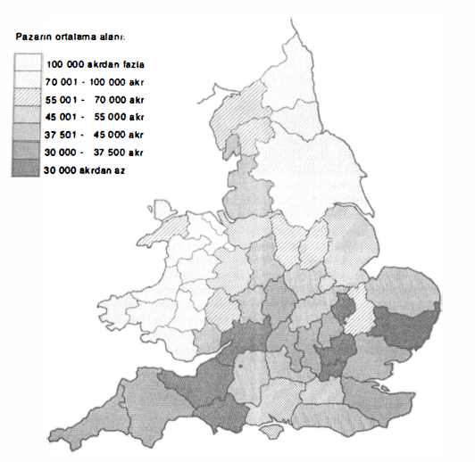

Böylece Avrupa, her şeyden önce O. Avrupa daha XV. yüzyıldan önce, mübadelenin en köhne biçimlerini devre dışı bırakmıştır. Bildiğimiz veya varlıklarından kuşku duyduğumuz fiyatlar, XV. yüzyıldan itibaren dalgalanan fiyatlardır, bu daha o sıralarda “modem” olan piyasaların yerleşik hale geldiklerinin ve bunların fırsat çıktığında, birbirlerine bağlı olarak, sistem taslakları çizebileceklerinin ve kentten kente bağlar kurabileceklerinin kanıtıdır. Gerçekten de, uygulamada yalnızca kasabalar ve kentlerin pazarlan vardır. Son derece nadir olan köy pazarları, XV. yüzyılda hâlâ mevcutturlar, ama ihmal edilebilir bir sayıdadırlar. Batı kenti her şeyi yutmuş; her şeyi kendi yasasına, kendi taleplerine ve kendi denetimlerine tabi kılmıştır. Pazar onun çarklarından biri haline gelmiştir.
İNGİLTERE’DE FİYAT DALGALANMALARININ ERKENLİĞİ
Kaynak: D. L Farmer, “Some Prices Fluctuations in Angevin England” in: The Economic History Review, 1956-57, s. 39, 1201 yılının kötü hasadından sonra, çeşitli tahıl fiyatlarındaki esaslı yükselmeyi kaydediniz.
Pazarlar, ilkel biçimleri altında bugün hâlâ mevcutturlar. Bunlar en azından tescilli varlıklardır ve günleri sayılıdır; bunlara bugün kentlerimizin alışılmış yerlerinde; düzensizlikleri, karmaşaları, haykırışları, şiddetli kokuları ve ürünlerinin tazeliği içinde rastlanmaktadır. Dün de, aşağı yukarı bunların aynıydılar: birkaç dört ayaklı destek, yağmurdan korunmak üzere bir örtü, her satıcıya önceden saptanmış, özenle kaydedilmiş ve yetkililerin veya mal sahiplerinin keyfine göre ödeme yapılması gereken, numaralanmış bir yer; bir alıcılar kalabalığı ve bir sürü küçük kazançlı insan, karmaşık ve faal bir proletarya: kaşarlanmış dedikoducular olma ününe sahip kadınlar, kurbağa derisi yüzücüleri (bu kurbağalar Cenevre’ye ve Paris’e, katırların tüm yükünü oluşturacak kadar çok miktarda gelmektedirler), maymuncuktu hırsızlar, süpürgeciler, el arabacıları, işportacılar, berbat işlerini babadan oğula aktaran asık suratlı denetçiler, perakendeciler ve kıyafetlerinden tanınan köylüler ve köylü kadınlar, alışveriş peşinde burjuva kadınlar, (zenginlerin dediğine göre) sepetin sapını dansettirmekte anlaşan hizmetçi kızlar (o zamanlarda “katır nallamak” denilmekteydi), pazarda kaba ekmekler satan fırıncılar, çok sayıdaki sergileriyle sokak ve meydanları işgal eden kasaplar, toptancılar (toptan balık, peynir veya tereyağ satanlar), ödenti toplayıcıları... Nihayet her yerde tezgâhlara yayılmış mallar, yağ topakları, sebze yığınları, peynir kalıpları, meyvalar, üzerinden su damlayan balıklar, av hayvanları, kasabın hemen orada parçaladığı etler, yapraklan mal sarmaya yarayan satılmamış kitaplar. Kırlardan bir de saman, odun, ot, yün, hatta keten, kenevir gelmekte, köylülerin dokuduğu bezler bile pazara getirilmektedir.
Eğer ilkel pazar kendine benzeyen bir şekilde, yüzyıllar boyunca tutunabildiyse, bunun nedeni kesinlikle, bu pazarın sağlam basitliği içinde yenilmesinin mümkün olmamasıdır; çünkü çabuk bozulan malları, taze olarak ve doğrudan yakınlardaki bahçe ve tarlalardan getirilmiş olarak sunmaktadır. Aynı zamanda düşük fiyatlarından da ötürü, çünkü özellikle “ilk elden satış yapılan” ilkel pazar, mübadelenin en doğrudan, en saydam, en iyi gözetim altında tutulan biçimidir ve aldatmalara karşı en korunaklı alandır. En adili midir? Boileau’nun Meslekler kitabı (1270’lere doğru kaleme alınmıştır), bunun böyle olduğunu ısrarla söylemektedir. “Çünkü mallar pazarın ortasına gelmekte ve iyi veya usullere uygun olup olmadıklarını görülmektedir... çünkü pazarın ortasında açıkta satılan şeylerden... zengin veya fakir herkes pay alabilir”. Alman söyleyişine göre, bu el tutuşarak, gözler birbirine bakarak yapılan ticaret (hand-in-hand, auge-in auge handel), hemen ortaya çıkan mübadeledir: satılan hemen orada satılmakta, satın alman hemen alınmakta ve ödeme hemen yapılmaktadır; kredi bir pazardan diğerine, ancak şöylesine bir rol oynamaktadır. Bu çok eski mübadele tipi Pompei’de, Ostia’da veya Romalı Tingad’da uygulanmaktaydı; ve yüzyıllar, binyıllar önce de bu uygulama vardı: Eski Yunan’da pazarlar olmuştur, tıpkı firavunlar Mısır’ında olduğu gibi, klasik Çin’de ve mübadelenin çok erkenden ortaya çıktığı Babil’de pazarlar vardır. Avrupalılar Tenochtitlan’ın (Mexico) yakınında bulunan Tlalteco pazarının alacalı bulacalı harikalarını ve pazar örgütlenmesini; mübadelelerin azlığına rağmen, düzeni onları hayran bırakan, Kara Afrika’nın “kurallı ve uygar” pazarlarını tasvir etmişlerdir. Habeşistan’da pazarlar, kökenleri itibariyle, zamanların karanlığı içinde kaybolmaktadırlar.
Kentsel pazarlar, genel olarak haftada bir veya iki kere kurulmaktadırlar. Onları iaşe edebilmek için, kırın ürünleri üretmeye ve biraraya getirmeye zamanının olması ve satış için emek-gücünün bir bölümünden (satış tercihan kadınlara bırakılmaktadır) vazgeçebilecek durumda olması gerekmektedir. Büyük kentlerde, pazarların hergün kurulur hale gelmeye yöneldikleri doğrudur; örneğin pazarların ilke olarak (ve çoğu zaman fiilen) yalnızca çarşambaları ve cumartesileri kurulması zorunda olunan Paris’te durum böyledir. İster kesintili, ister sürekli olsunlar, kırla kent arasındaki bu ilkel pazarlar her halükârda, sayıları ve asla bıkmayan tekrarlarıyla. Adam Smith’in de farkettiği üzere, bilinen tüm mübadelelerin en büyük kısmını temsil etmekteydiler. Kent yetkilileri de, bu pazarların örgütlenmesini ve gözetimini sıkı bir şekilde ellerine almışlardır, bu onlar için hayati bir sorundur. Öte yandan, bunları cezalandırmakta, kurala bağlamakta hızlı davranan ve fiyatlar sıkı sıkıya gözetim altında tutan, yakındaki yetkililerdir. Sicilya’da bir satıcı, saptanmış tarifenin bir “grano” üstünde bile fiyat istese, bal gibi küreğe mahkûm olabilir! Bu durum 2 Temmuz 1611’de Palermo’da ortaya çıkmıştır. Chateaudun’de, üçüncü kez kusurlu bulunan fırıncılar “sucuk gibi bağlanmış olarak ve hiçbir koruma tedbiri alınmadan, bir yük arabasının tepesinden atılmaktaydılar”. Bu uygulama, Charles d’Orleans’ın, belediye yetkililerine fırıncıları teftiş hakkını verdiği 1417’ye kadar geri gitmektedir. Cemaat bu cezanın kaldırılmasını, ancak 1602’de sağlayabilecektir.
Ama gözetimler ve kınamalar, pazarın gelişmesini, talebin keyfine göre şişmesini, kentsel hayatın ortasına yerleşmesini engelleyememektedirler. Belli günlerde ziyaret edilen pazar, toplumsal hayatın doğal bir merkezidir. İnsanlar birbirlerini burada bulmakta, burada anlaşmakta, küfürleşmekte, tehtidden yumruklaşmaya burada geçmektedirler; olaylar, sonra da suç ortaklıklarını açığa çıkartan mahkemeler buradan kaynaklanmakta; nöbetçilerin aslında ender olan, seyirlik ve temkinli müdahaleleri de burada meydana gelmekte; siyasal ve diğer haberler burada dolaşmaktadırlar. 1534’de Norfolk kontluğunda, Fakenham pazarının kurulduğu kamusal meydanda, kral Vlll. Henry’nin eylem ve tasarıları yüksek sesle eleştirilmektedir. Ve hangi İngiliz pazarında, yıllar boyunca vaizlerin ateşli sözlerini duymayız ki? Bu hassas kalabalık, iyileri bile dahil, tüm nedenlerle buradadır. Pazar aynı zamanda iş ve aile anlaşmalarının tercihli yeridir. “Noter sicillerine göre, Salerno ilindeki Giffoni’de, XV. yüzyılda, pazar kurulduğu günlerde, yiyecek maddeleri ve yerel zenaat ürünlerinin satışının dışında, (olağandakinden) daha yüksek bir toprak alış-satışı, iyileştirme çabaları karşılığı düşük bedelden kiralama, bağış, evlilik sözleşmesi, drahoma anlaşmaları yüzdesi kaydedilmektedir”. Pazar aracılığıyla her şey hızlanmaktadır. Örneğin İngiltere’de, Lancaster’da XVII. yüzyılın sonunda, burada dükkân işleten William Stout, "on the market and fair days” yardımcılar almaktadır. Kuşkusuz bu genel bir kuraldır. Tabii ki, birçok kentte olduğu gibi, dükkânların pazar veya fuar günlerinde resmen kapatılmamalan koşuluyla.
Pazarın bir ilişkiler hayatının göbeğinde yer aldığını, atasözlerinin bilgeliği tek başına kanıtlamaktadır. İşte buna birkaç örnek: “Sessiz ihtiyat ve şeref hariç pazarda her şey satılır”. “Kim denizdeki balığı satın alırsa, yalnızca kokusuna sahip olacaktır”. Eğer alış veriş sanatını iyi bilmiyorsan, canını sıkma “pazar sana onu öğretecektir”. Pazarda hiç kimse yalnız olmadığı için “kendini düşün, pazarı düşün”, yani diğerlerini. Bir İtalyan atasözü, becerikli biri için “val pi avere amici in piazza che denari netle cassa” kasasında para yerine, pazarda dostlara sahip olmak daha iyidir demektedir. Bugünün Dahomey folkloru için, pazarın çağrılarına direnmek, bilgeliğin görüntüsüdür. “Gel ve al diye bağİran satıcıya sahip olduğumdan fazlasını harcamam diye cevap vermek bilgeliktir”.
Kentler tarafından ele geçirilen pazarlar, onlarla birlikte büyümektedirler. Sayıları artmakta, onları içeremeyecek kadar dar kentsel mekânlarda infilâk etmektedirler. Ve yürüyüş halindeki modernlik oldukları için, hız kazanmaları hiçbir engeli kabul etmemektedir; sıkıntılarını, çöplerini, inatçı kalabalıklarını, hiçbir cezaya uğramadan dayatmaktadırlar. Çözüm, onları kentlerin kapılarına doğru; surların ötesinde, dış mahallelere doğru atmaktır. Yeni bir pazar ortaya çıktığında, örneğin Saint-Antoine mahallesindeki Saint-Bernard meydanındaki gibi (2 Mart 1643); örneğin (Ekim 1660’ta) “Saint-Michel kapısıyla Paris kentimizin çukuru, Cehennem Sokağı ve Saint-Jacques kapısı arasındaki” gibi, çoğu zaman böyle yapılmaktadır. Fakat kentlerin göbeğindeki eski buluşma yerleri tutunmaktadırlar; hatta tıpkı 1667’de Saint- Michel köprüsünden, bu köprünün ucuna veya yarım yüzyıl sonra Mouffetard sokağından, yakındaki hotel des patriarehes’m avlusuna (Mayıs 1718) olduğu gibi, onlara hafifçe yer değiştirtmek bile, koskoca bir olay olmaktadır. Yeni, eski olanı kovmamaktadır. Ve konut alanları büyüdükçe, surların yer değiştirmesiyle, bilgece kentin çevresine yerleştirilmiş olan pazarlar, kendilerini bir gün surların içinde bulmakta ve orada kalmaktadırlar.
Paris’te Parlamento, belediye görevlileri, polis amiri (1667’den itibaren) onları sınırlarının içinde tutmak üzere, umutsuzca uğraşmaktadırlar. Boşuna. Böylece 1678’de Saint-Honore caddesini kullanmak olanaksız hale gelmiştir, “bir pazarın haklarını aşarak, Saint-Honore caddesi, 15-20 numaralar arasındaki kasabın önünde ve yakınında kurulmuş olmasından” ötürü, pazar kurulduğu günler burada, kentli veya köylü birçok perakendeci kadın, sokağın ortasına mallarını yaymakta ve Paris’in en sık geçilen ve önemli caddelerinden biri olduğu için, her zaman serbest olması gereken, bu caddeden geçişi engellemektedirler”. Apaçık bir suistimal, fakat buna nasıl çare bulunabilir? Bir yeri serbest hale getirmek, başka birini çıkmaza sürüklemektedir. Aşağı yukarı 50 yıl kadar sonra, küçük Quinze-Vingts pazarı hep yerindedir, çünkü 28 Hazİran 1714’te, komiser Brussel Châtelet’deki üstüne, “Efendim, bugün küçük Quinze-Vingts pazarında ekmek almak için bulunduğum sırada, pazar burjuvalarının, balıkların iç organlarını sokağa atan uskumru satıcılarından şikâyetlerini aldım, bu atılanlar ortalığı pislettiklerinden ötürü çok uygunsuzdur. Bu kadınlara, tıpkı bezelye kabuklarında olduğu gibi, bu parçaları sepetlere koyup, sonra da yük arabalarına boşaltma talimatı verilmesi iyi olur” diye yazmaktadır. Kutsal Hafta esnasında Notre-Dame avlusunda kurulduğu için daha da büyük bir rezalet, Lart fuarıdır, aslında burası Paris’in fakirleriyle, daha az fakirlerinin domuz sucuğu ve yağı ihtiyaçlarını sağlamaya geldikleri büyük bir pazardır. Kamu kantarı, doğrudan doğruya, katedralin kapı sundurmasının altına yerleşmektedir. Ve malını diğerinden önce tarttırma telaşı bir itiş kakışa yol açmaktadır. Ve bu esnada alaylar, kaba şakalar ve hırsızlıklar olmaktadır. Düzeni sağlamakla görevli muhafızlar da, diğerlerinden daha iyi bir tavır içinde olmamakta ve komşu Hôtel-Dieu’nün ölü gömücüleri de, kendilerine şaklabanlık yapma izni vermektedirler. Bütün bunlar, 1669’da Gramont şövalyesine “Notre-Dame kilisesiyle, Saray adası arasında yeni bir pazar” kurma izni verilmesini engellememiştir. Her cumartesi, felâket düzeyinde sıkışmalar meydana gelmektedir. İnsanlarla tıklım tıklım dolu meydanlardan, dinsel resmi geçitlerin veya kraliçenin arabasının geçişi nasıl sağlanacaktır?
Tabii ki bir alan boşalınca, pazarlar burayı ödünç almaktadırlar. Moskova kentinde her kış, Moskova nehri donduğunda, barakalar, sergiler buzun üzerine yerleşmektedir. Yılın bu döneminde, kar üstünde kızakla taşımanın kolaylığının ve etler ile kesilmiş hayvanların açık havada donmalarının sağladığı olanakla, Noel arefesin- de veya ertesinde, pazarlardaki mübadelelerde düzenli bir artış olmaktadır. Londra’da, XVII. yüzyılın olağandışı soğuk kışları esnasında, “bütün İngiltere’de Noelden, Krallar gününün ertesine kadar süren” karnavalın sevinçlerini, donmuş nehrin üzerinde taşıyabilmek bir bayramdır. Aynı zamanda meyhane olan kulübeler”, açık havada kızartılan koskoca sığır parçaları, İspanya şarabı ve hayat suyu tüm halkı çekmekte, hatta kral bile (13 Ocak 1677) buraya gelmektedir. Ancak, 1683’ün Ocak ve Şubatında işler daha az neşeli olmuştur. Hiç duyulmadık soğuklar kenti gafil avlamıştır, Thames’in ağzına doğru, muazzam buzullar, hareketsiz hale gelmiş olan tekneleri ezmekle tehtid etmektedirler. Yiyecek ve mal yoktur, fiyatlar üç katına, dört katına çıkmış, kar ve buzla dolan sokaklar kullanılamaz hale gelmiştir. Bu durumda hayat, donmuş nehrin üzerine sığınmıştır, burası iaşe arabalarına ve kiralık arabalara yol görevi yapmaktadır; tüccarlar, dükkâncılar, zenaatkârlar burada barakalar kurmaktadırlar. Muazzam başkentte sayının gücünü ölçen devasa bir pazar kendiliğinden ortaya çıkmaktadır -Toskanalı bir tanık, o kadar devasa ki, “çok büyük bir fuar” görünümünde diye yazmaktadır-. Ve tabii hemen “şarlatanlar, soytarılar ve tüm hilebazlar, birkaç kuruş kazanabilmek için” gelmektedirler. Ve bu olağandışı buluşma, geriye gerçek bir fuar anısı (The fair on the Thames, 1683) bırakmaktadır. Beceriksiz bir tahta oyma baskısı, bu resimsel karışıklığı bizim için yeniden inşa etmeksizin, olayı çizmektedir.
Mübadelelerin artması heryerde kentleri haileler (hal) inşa etmeye yöneltmiştir; bundan, çoğu zaman tamamen açıkta kurulmuş pazarların çevrelediği, üstü kapalı çarşıları anlayınız. Bu haller çoğu zaman sürekli ve uzmanlaşmış çarşılardır. Çok sayıda yünlü kumaş hali biliyoruz. Carpentras gibi orta büyüklükte bir kent bile, kendi yünlü kumaş haline sahip olmuştur. Barselona ala dels draps'ını, Borsa’nın (Lonja) üstüne yerleştirmiştir. Blackwell Hall adını taşıyan Londra’nınki ise, 1397’de yapılmış, 1558’de yeniden yapılmış, 1666 yangınıyla tahrip olmuş, 1672’de olağanüstü boyutlarda olmak üzere, yeniden inşa edilmiştir. Uzun süre, haftanın birkaç günüyle sınırlı olan satışlar, XVIII. yüzyılda günlük hale gelmiş ve country clothier’lar, satılmayan parçalarını burada depo olarak ve gelecek pazara satmak üzere bırakma adetini edinmişlerdir. 1660’da halin postacıları, sürekli memurları, koskoca bir karmaşık örgütlenmesi vardır. Ama daha bu gelişmeden önce, karmaşık bir binanın yükseldiği Basinghall Street, “iş mahallesinin kalbi” olmuştur bile, yani Venedik için Fondaco dei Tedeschi’nin olduğundan daha fazla.
Barındırdıkları mallara göre, tabii ki farklı haller vardır. Örneğin buğday (Toulouse’da daha 1203’te), şarap, deri, ayakkabı, kürk (Alman kentlerinde kornhauser, belzhauser, schuhhauser) halleri böyledir ve hatta, değerli bir boya bitkisi üretim merkezinde yer alan Görlitz’de, bir boya hali bulunmaktadır. XVI. yüzyılda İngiliz kaSaba ve kentleri, çeşitli adlar taşıyan ve çoğu zaman, cömertliği tutan oralı bir tüccarın masraflarını karşılamasıyla, çeşitli adlar taşıyan çok sayıda halin yapımına tanık olmuşlardır. Amiens’de, XVII. yüzyılda iplik hali, kentin göbeğinde, Saint-Firminen-Castillon kilisesinin ortasında, büyük pazarın veya buğday pazarının arkasında yer almaktadır: zenaatkârlar, sayette denilen “taranarak yağından arındırılmış ve genellikle küçük çıkrıkta eğrilmiş” yün ipliklerini gündelik olarak buradan almaktadırlar: burada söz konusu olan, yakındaki kırlarda eğrilerek, kente verilen bir üründür. Aynı şekilde, kasapların tezgâhları, kapalı bir mekânda birbirlerine yaklaştırılmış olarak, gerçeği söylemek gerekirse, bir hal oluşturmaktadırlar. Evreux’de böyledir; Troyes’da, karanlık bir hangar içinde böyledir; Beccarie'nin, kentin büyük kasaplarının 1339’dan itibaren, Rialto meydanının birkaç adım ötesindeki eski Ca’Querini’de toplanmaya başladıkları Venedik’te böyledir; kasaplar, aynı Beccarie adını taşıyan sokak ve kanalı da kullanmakta ve ancak XIX. yüzyılın başında yok olacak olan, kasaplar kilisesi San Matteo da burada yer almaktadır.
Halle kelimesi böylece birden fazla anlam alabilmekte ve üstü ancak binay kadar örtülmüş basit pazardan, çok erkenden “Paris’in miğdesi” haline gelen karmaşık Hal örgütlenmesine kadar birçok şeyi ifade etmektedir. Paris Halinin muazzam mekanizması Philippe Auguste dönemine kadar geriye gitmektedir. Bu geniş bütün, ancak 1786 gibi çok geç bir tarihte kullanım alanını değiştirecek olan Innocents mezarlığının yanındaki Champeaux’da, o sıralarda inşa edilmeye başlamıştır. Fakat, kabaca 1350-1450 arasında süren büyük gerileme esnasında, Paris Halinde aşikâr bir bozulma ortaya çıkmıştır. Tabii ki bu gerilemenin yüzünden; ama aynı zamanda, civardaki dükkânların rekabeti yüzünden de. Hal bunalımı, her halükârda tipik olarak Paris’e özgü değildir. Krallığın diğer kentlerinde de, apaçık görülmektedir. Durumdan etkilenen binalar harabeye dönmektedirler. Bazılarına da civarın çöpleri atılmaktadır. Paris’te dokumacılar hali, “1484-1487 arası hesaplarına göre, en azından bazı kısımları itibariyle, krallık topçusunun arabalarına garaj görevi yapmıştır”. S. Lopez’in dinsel binaların “gösterge” olma rolü hakkındaki değerlendirmeleri bilinmektedir: 1223’te Bologna katedrali, 1265’te Siena katedrali veya 1301-1302’de Floransa’daki Santa Maria del Fiore katedrali için olduğu gibi, dinsel inşaatların kesintiye uğraması, kesin bir bunalım işaretidir. Acaba, tarihlerinin bütünsel olarak ele alınmalarının hiç denenmemiş olduğu halleri, bu “gösterge” olma mertebesine yükseltmek mümkün müdür? Eğer buna evet cevabı verilirse, ekonomik toparlanma Paris’te 1543-1572 yılları esnasında işaret edilebilir; toparlanma bu dönemin son yıllarından daha çok, ilk yıllarında belirmektedir. Parlamento’da 11 Ekimde kaydedilmiş olan, 1. François’nm kararnamesi (20 Eylül 1540), aslında yalnızca ilk harekettir. Bunu başkaları izlemiştir. Bunların aşikâr amacı: Paris’i güçlü bir organizmayla donatmaktan çok, onu güzelleştirmektir. Ama bu arada, daha faal bir hayata geri dönüş, başkentin genişlemesi, bunların sonrasında Halin toparlanmasıyla, civardaki dükkân ve satış yeri sayısındaki azalma, bu işlemi olağanüstü bir ticari işlem haline getirmiştir. Deri değiştiren Hal, her halükârda XVI. yüzyılın sonunda. Aziz Louis dönemindeki eski etkinliklerine yeniden kavuşmuştur. Burada da “Rönesans” olmuştur.
Hiçbir hal planı, bu geniş bütün hakkında tam bir imge sağlayabilir: kapalı mekânlar, açık mekânlar, komşu evlerin kemerlerini tutan direkler, kenarlarda yer alan ve düzensizlik ve sıkışıklıktan yararlanan, hem de onları kendi çıkarına olmak üzere yaratan istilacı bir ticari hayat. Savary (1761), bu çok karışık pazarın XVI. yüzyıldan itibaren değişmediğini söylemektedir. Buna fazla inanmayalım: sürekli iç hareketler ve yer değiştirmeler olmuştur. Artı, XVIII. yüzyılda iki yenileştirme: 1767’de buğday hali eski Soissons konağının yerine göçetmiş ve yeniden inşa edilmiştir; yüzyılın sonunda deniz balıkları hali, deri hali yeniden inşa edilecek ve şarap hali Saint- Bernard kapısının dışına göç edecektir. Ve daha o sıralarda bile, halleri taşıma ve düzenleme projelerinin ardı arkası kesilmemektedir. Fakat devasa bütün (50.000 m2 alan), oldukça mantıklı olarak yerinde kalmıştır.
Üstü kapalı binalarda, yalnızca yünlü kumaş, bez, tuzlama (tuzlu balık), taze balık halleri yer almaktadır. Ama bu binaların etrafında, onlara yapışık olmak üzere, açık havada buğday, un, yağ, kandil, kuyu ipi pazarları yükselmektedir. Çevreye yerleştirilmiş olan “direk”lerin yakınında, eskiciler, fırıncılar, ayakkabı tamircileri ve “halde yer tutma hakkına sahip, Paris’in diğer fakir tüccarları” olabildiğince yerleşmektedirler. İki Hollandalı seyyah, “1 Mart (1657) günü. Halin yanındaki eskiciler çarşısını gördük. Burası yontma taşlardan kazıkların tuttuğu büyük bir galeridir, bu galeride eski elbise satıcılarının tümü yerleşmiştir... Haftada iki kere halka açık pazar vardır...: aralarında oldukça çok Yahudi varmışa benzeyen bu eskicilerin hepsi, pazar olduğu günlerde mallarını sergilemektedirler. Buradan ne zaman geçilirse geçilsin, onların iyi bir kır mantosu, güzel bir elbise diye sürekli bağırmalarından ve insanları dükkânlarına girsinler diye çekiştirmelerinden rahatsız olunmaktadır... sahip oldukları elbise ve mobilyanın muazzam miktarına inanmak mümkün değildir: bunların arasında çok güzel parçalar da görülmektedir, eğer işten iyi anlamıyorsanız, bunlardan satın almak tehlikelidir, çünkü eski olanı yeniymiş gibi göstermek üzere, harika bir onarım ve yama yapma becerisine sahiptirler" demektedirler. Bu dükkânlar iyi aydınlatılmadıkları için “siyah bir elbise aldığınızı sanıyorsunuz, ama gün ışığına çıktığınızda yeşil veya mor olduğunu (veya) bir leopar derisi gibi çizgili olduğunu görüyorsunuz”.
Birbirlerine bağlanmış pazarlar toplamı olan, çöplerin, atık suların, çürümüş balıkların yığıldığı güzel Hal, “aynı zamanda Paris’in en kötü ve en pis mahallelerinden biridir” de. Bu itirafı Piganiol de Force (1742) yapmaktadır. Hal aynı zamanda bağırtılı ve küfürlü tartışmaların da başkentidir. Erkek satıcılardan daha çok sayıda olan kadın satıcılar tonu vermektedirler: “bunlar Paris’in en kaba ağızlarına sahip olma” ününü taşımaktadırlar. “Hey! Yüzsüz bayan! Konuş bakalım! Hey! Kaşarlanmış orospu! Sen ilkokul çocuklarına orospuluk edersin! Yürü! Montaigu kolejine yürü! Utanman gerekmez mi? İhtiyar döküntü! Sırtın kamçıdan kurtulmuyor! Yüzsüz! Çifte aşağılık, gırtlağına kadar sarhoşsun". XVII. yüzyılda balık satan kadınlar hiç ara vermeden böyle konuşmaktadırlar. Ve herhalde daha sonra da.
Paris’in bu merkezi pazarı sonuçta ne kadar karmaşık, ne kadar kendine özgü olursa olsun, yalnızca, alışılmış boyutların dışına çok erkenden çıkan büyük bir kentin iaşe karmaşıklıklarını ve gereklerini gözler önüne sermektedir. Londra, bilinen biçiminde gelişince, aynı nedenler aynı sonuçları doğurduklarından, İngiliz başkenti çok sayıda pazarın istilasına uğramıştır. Onlara tahsis edilmiş eski alanlara sığamadıkları için, komşu sokaklara taşmaktadırlar, böylece bunların herbiri de uzmanlaşmış bir çarşı haline gelmektedir: balık, sebze, veya kümes hayvanları vb. Kraliçe Elizabeth döneminde bunlar, hergün giderek artan bir şekilde, başkentin en çok insanın geçtiği sokaklarını tıkamaktadırlar. Yalnızca 1666’daki büyük yangın, Great Fire genel bir düzenlemenin yapılmasına olanak verecektir. Bu yangından sonra yetkililer caddeleri kurtarmak üzere, geniş avlulu büyük binalar inşa etmektedirler. Böylece üstü açık, etrafı kapalı, bazıları daha çok toptancılığa yönelik, uzmanlaşmış, diğerleri daha çeşitlenmiş çarşılar oluşmuştur.
Bunların en genişi olan Leadenhall -Avrupa’nın en genişi olduğu söylenmekteydi- Paris Halininkine benzeyen bir manzara sunmaktadır. Kuşkusuz daha düzenli bir şekilde. Leadenhall, 1666’dan önce onun eski yerinde tomurcuklanmış olan, Gra- cechurch Street, Cornhill, The Poultry, New Fish Street, Eastcheap’de yer alan tüm pazarları, dört binanın içinde özümlemiştir. Bir avlunun içinde, 100 kasap tezgâhı sığır eti satmakta; başka yerlerde balık, peynir, yağ, çivi, hırdavat satılmaktadır... Toplam olarak “kent halkının iftihar konusu ve kentin en büyük seyirliklerinden biri olan, canavar bir pazar”. Tabii ki, Leadenhall’ün simgesi olduğu düzen, ancak bir süre devam etmiştir. Kent büyümeye devam ederek, bu bilgece çözümleri aşıyor, eski güçlüklerle tekrar karşılaşıyordu; 1699’dan ve herhalde daha öncesinden itibaren tezgâhlar yeniden sokakları işgâl etmeye, evlerin cümle kapılarının altına yerleşmeye, seyyar satıcılara yönelik yasaklamalara rağmen, perakendeciler kente yayılmaya başlamışlardır. Bu sokaklarda bağırarak satış yapanların en resim gibi olanları kadın balık satıcıları ve kafalarının üzerindeki bir sepette taşıdıkları mallarıdır. Bunlar kötü bir üne sahiptirler, onlarla alay edilmekte ve aynı zamanda sömürülmektedirler. Eğer o gün iyi satış yapıtlarsa, akşama onları meyhanede bulmak kesindir. Herhalde Haldeki balıkçı kadınlar kadar bozuk ağızlı ve saldırgandırlar. Ama Paris’e geri dönelim.
Paris iaşesini sağlamak için, başkentin çevresinde muazzam bir bölge örgütlemek zorundadır: balık ve istiridye Dieppe, Crotoy, Saint-Valery’den gelmektedir. Bir yolcu (1728) “bu son iki kentin yanından yalnızca deniz ürünlerinin geçtiğine tanık oluyoruz” demektedir. “Ama bu bizi her yandan izleyen balığı yakalamak olanaksızdır” diye eklemektedir. “Hepsini Paris’e götrüyorlar”. Peynir Meaux’dan, tereyağ Dieppe yakınındaki Gournay’den, veya Isigny’den, Poissy pazarlarının kasaplık hayvanları Sceaux’dan ve uzaktaki Neubourg’dan, has ekmek Gonesse’den, kuru sebzeler her cumartesi pazar kurulan Normandiya’daki Caudebec’den gelmektedir... Bunun sonucunda, sürekli olarak ele alınmaları ve değiştirilmeleri gereken bir önlem dizisi ortaya çıkmaktadır. Esas olarak, kentin doğrudan iaşe alanını güvenceye almak, üreticilerin, perakendecilerin ve taşımacıların, yani sayelerinde büyük kentin pazarlarının sürekli olarak iaşe edildiği tüm mütevazi aktörlerin faaliyetine izin vermek söz konusudur. Demek ki, profesyonel tüccarların serbest hareket alanı, bu yakın alanın dışına atılmıştır. Châtelet polisine ait bir emirname (1622), tüccarların buğday iaşesiyle uğraşabilecekleri alanı, yarı çapı 10 fersah olan bir çemberin dışına taşımıştır; bu yarı çap canlı hayvan alımı için 7 fersah (1635), “otlayan” denilen danalar ve domuzlar için 20 fersah (1665); tatlı su balıkları için, XVII. yüzyılın başından itibaren 4 fersah; toptan şarap alımları için 20 fersahtır.
Birçok başka sorun daha vardır: en zorlarından biri at ve hayvan sağlanmasına ilişkin olanıdır. Bu iş, olanak elverdikçe kent surlarının çevresine veya dışına atılacak olan, gürültülü patırtılı pazarlarda yapılmaktadır. Daha sonra Vosges meydanı olacak olan yer, Tournelles yakınlarındaki metruk bir mekân olarak, uzun süre bir at pazarı olacaktır. Paris böylece sürekli olarak, adeta lamamı at panayırlarından oluşan bir pazarlar çemberi ile kuşatılmış olmaktadır. Biri kapanmakta, ertesi gün, başka bir tanesi aynı insan ve hayvan yığılmasıyla açılmaktadır. Bu pazarlardan birinde, herhalde Saint-Victor’da, işte görgü tanıklarına göre 1667’de bir seferinde “üç binden fazla at (vardır), ve bu kadar çok sayıda olmaları muazzam bir şeydir, çünkü haftada iki kere pazar vardır”. Gerçekte at ticareti kentin tümüne nüfuz etmektedir: eyaletlerden veya dışarıdan gelen “yeni” atlar vardır, ama bunlardan daha çok, “eski, yani hizmet görmüş”leri, sonuçta kelepir olanları bulunmaktadır, bu atlar bazen “burjuvaların pazara göndermeden kurtulmak istedikleri”dir, bunun sonucunda at cambazlarının ve ahır sahibi tüccarların hizmetinde bir simsar ve nalbant bulutu ortaya çıkmaktadır. Bunun dışında, her mahallenin at kiralayıcıları vardır.
Büyük hayvan pazarlan da muazzam yığılma alanlarıdır. Sceaux’da (her pazartesi) ve Poissy’de (her perşembe), küçük kentin dört kapısında (Dames, Pont, Confions, Paris kapıları) bunlardan kurulmaktadır. Pazarlarda alış yapmak için gereken parayı avans olarak veren (ve sonra bunlan ödettiren) bir “traitant” (celep), Fransa’nın tümünden hayvan satın alan aracı, simsar (griblin veya bâtonnier, kışkışçı) ve nihayet hepsi de sefil perakendeciler olmayıp, bazılarının burjuva hanedanları bile kurduğu kasaplar zinciri aracılığıyla, bu pazarlarda çok faal bir et ticareti örgütlenmiştir. Bir döküme göre, 1707’de Paris pazarlarında, yuvarlak rakamlarla her hafta 1300 sığır, 8200 koyun ve hemen hemen 2000 dana (yılda 100.000) satılmaktadır. “Hem Poissy, hem de Sceaux pazarını ellerine geçirmiş olan” celepler 1707’de “örneğin Petit-Montreuil"de olduğu gibi, Paris çevresinde (onların denetimi dışında) alış veriş yapılmasından yakınmaktadırlar”.
Paris’i iaşe eden et piyasasının, tıpkı başkentin buğdayını düzenli veya düzensiz olarak çektiği geniş alanlar gibi, Fransa’nın büyük bir bölümüne yayıldığını aklımızda tutalım. Bu yayılma, ortaya yollar ve bağlantılar sorununu çıkartmaktadır. Bu önemli sorunun kaba hatlarını bile, birkaç satırla ortaya koymak mümkün değildir. Kuşkusuz esas olan, Paris’in iaşesi için bazı su yollarını hizmete sokmaktır -Seine’e kavuşan Yonne, Aube, Maine, Oise ve Seine’in kendi-. Nehir kentten geçerken “limanlar”ını açmaktadır -1745’te toplam olarak 26 tane-, bu limanlar aynı zamanda, her şeyin daha hesaplı olduğu şaşırtıcı ve geniş pazarlardır. En önemli iki tanesi, nehrin yukarı tarafının trafiğinin ulaştığı -buğday, şarap, odun, ot (aslında bu sonuncu malın iaşesi konusunda, Tuileries limanı üste çıkıyora benzemektedir)- Greve meydanıyla; nehrin aşağı tarafından gelen malları kabul eden Saint-Nicolas limanıdır. Nehrin üzerinde sayılamayacak kadar çok gemi, karadan atla çekilen kayıklar, ve XIV. Louis zamanından beri, bir cins su kira arabası gibi olan, müşterilerin emrine amade küçük kayıklar (bachoteur) bulunmaktadır, bu kiralık kayıklar, Londra limanının aşağı tarafında, kentin sarsıntılı kira arabalarına çoğu zaman tercih edilen, Thames üzerindeki binlerce “gondol”a benzemektedirler.
Ne kadar karmaşığa benzerse benzesin, Paris örneği, onunkiyle aynı 10 veya 20 tane başka örneğe yaklaşmaktadır. Her büyük kent, kendi boyutlarına uygun bir iaşe alanı talep etmektedir. Örneğin, XVIII. yüzyılda Madrid’in hizmetinde olmak üzere, Kastilya’nın ulaşım araçları kötüye kullanılan bir şekilde seferber edilmişlerdir, öylesine ki, bu örgütlenme tüm ülke ekonomisini kırma noktasına gelmiştir. Tirso de Molina’ya (1625) inanmak gerekirse, her şey harika bir şekilde basittir, meyvalar, kar, Serra d’Estrela’dan, yiyecekler hatırşinas denizden getirilmektedir: “Masaya oturup yemek yemekte olan insanlar, balıkçıların ağlarının... kapılarının altında yakalanan balıkla dolduğunu görmektedirler”. Temmuz-Ağustos 1633 tarihli bir muhtıra, Tajo nehrinin üzerinde, yüzlerce, binlerce balıkçı kayığını görmek, gözler için bir zevk olmaktadır demektedir. Tembel, obur ve gerektiğinde kayıtsız olan kent, denizi yiyecektir. Fakat imge fazlasıyla güzeldir. Zaten bir kentin nüfusu ne kadar artarsa, iaşesi raslantıya o kadar bağlı hale gelmektedir. Venedik XV. yüzyıldan itibaren, tükettiği sığırları Macaristan’dan almak zorunda kalmıştır. XVI. yüzyılda herhalde 700.000’lik bir nüfusa ulaşmış olan İstanbul, Balkanların koyun sürülerini, Karadeniz ve Mısır buğdayını yutmaktadır. Ancak, padişahın sert yönetimi bu işi ele almasaydı, muazzam kent arızalara, pahalılıklara, trajik kıtlıklara maruz kalırdı ki, zaten bazı yıllarda bu duruma gene de düşmüştür.
Londra’nın durumu, kendi tarzına göre bir örnek oluşturmaktadır. Bu örnek, kollarını erkenden ahtapot gibi etrafa uzatan metropoller hakkında hatırlatabileceğimiz her şeyi, mutatis mutandis gündeme getirmektedir. Tarihsel araştırma tarafından, diğerlerine nazaran daha iyi aydınlatılmış olan bu örnek, resim veya anekdotu aşan sonuçların ortaya çıkartılabilmesine izin vermektedir. N. S. B. Gras, burada von Thünen’in ekonomik mekânın bölümler halinde örgütlenmesine ilişkin kurallarının tipik bir örneğini bulurken haklıdır. Hatta bu örgütlenme, Paris’in çevresinde olduğundan bir yüzyıl önce, Londra’nın etrafında meydana gelmiştir. Londra’nın hizmetine sokulan alan, tüm İngiliz üretim ve ticaret sistemini kapsama eğilimine girmiştir. XVII. yüzyılda her halükârda, kuzeyde İskoçya ve güneyde Manş denizine, doğuda kıyı gemiciliğinin gündelik hayatının esas unsuru olan Kuzey Denizine, batıda Galler ülkesine ve Cornwall'e temas etmektedir. Fakat bu mekânın içinde, ya kötü, ya da az işletilen -hatta ayak direyen- bölgeler vardır; örneğin Bristol ve civarındaki bölge böyledir. Paris için de olduğu gibi (ve von Thünen’in şeması içinde) en uzaktaki bölgeler hayvan ticaretine ilişkindirler: Galler ülkesi bu oyuna XVI. yüzyılda ve İskoçya çok daha geç olarak, 1707’de İngiltere ile birleşmesinden sonra, katılmışlardır.
Londra pazarının kalbi, tabii ki çok yakında yer alan su sokakları ve menzil kentler çemberiyle (Uxbridge, Erentford, Kingston, Hampstead, Watford, St. Albans, Hartford, Croydon, Dartford) kolayca ulaşılabilen Thames’in suladığı bölgelerdir; bu kentler başkentin hizmetinde harıl harıl çalışmakta; tahıl öğütüp un göndermekle, malt hazırlamakla, muazzam kente doğru yiyecek ve mamul ürünler yollamakla uğraşmaktadırlar. Eğer bir “metropoliten” pazara ait birbirini izleyen görüntülere sahip olmasaydı, bu pazarın yıldan yıla, tam da kentin nüfus artış ritminde yayıldığı ve büyüdüğü görülürdü (1600’de en fazla 250.000 olan nüfus, 1700’de 500.000 hatta daha fazlasına ulaşmıştır). İngiltere’nin toplam nüfusu da aralıksız artmaktadır, ama daha yavaş olarak. Bu durumda tarihçi bir hanımın söylediğinden daha iyisini söyleme mümkün müdür? Londra İngiltere’yi yemekte: “is going to eat up England”. Bizzat 1. James de “With time England will only be London" demekte değil miydi? Tabii ki bu formüller hem doğrudur, hem de değildir. Gereğinden az ve gereğinden fazla değerlendirme vardır. Londra’nın yuttuğu yalnızca İngiltere’nin içi olmayıp, aynı zamanda, eğer öyle söylenebilirse, dışıdır da, yani İngiliz dış ticaretinin en azından 2/3 veya 3/4’ü, hatta 4/5’i. Fakat Saray, ordu ve bahriyenin üçlü iştahı tarafından takviyeli olsa bile, Londra her şeyi yutmamakta, her şeyi sermayelerinin ve yüksek fiyatlarının cazibesine tabi kılmamaktadır. Ve hatta, onun etkisiyle ulusal üretim İngiliz kırlarında olduğu kadar, “tüketiciden çok, dağıtıcı” küçük kentlerde de artmaktadır. Yapılan hizmetlerin belli bir karşılığı vardır.
Londra’nın genişlemesinin sayesinde inşa olan şey, aslında İngiliz hayatının modernliğidir, “çok temiz bir şekilde giyinmiş olduklarından ötürü hanım sanılabilecek” han hizmetçileriyle; iyi giyimli, beyaz ekmek yiyen, Fransız köylüleri gibi tahta ayakkabı giymeyen, hatta bir yere atla giden köylüleriyle, Londra’ya yakın kırların zenginleşmesi, seyyahların gözünde aşikâr hale gelmektedir. Fakat İngiltere’nin tüm alanı ve uzakta lskoçya ile Galler ülkesi, kentsel ahtapotun kolları tarafından yakalanmış ve dönüştürülmüştür. Londra’nın değdiği her bölge uzmanlaşmaya, dönüşmeye, ticarileşmeye başlamaktadır; aslında bu işler henüz sınırlı kesimlerde meydana gelmektedir, çünkü modernleşmiş bölgeler arasında, geleneksel çiftlikleri ve ekim tarlalarıyla, eski kırsal düzen sıklıkla varlığını sürdürmektedir. Örneğin, Thames’in güneyinde, Londra’nın çok yakınındaki Kent’te, başkenti iaşe eden meyva bahçeleri ve şerbetçiotu yetiştirilen topraklar ortaya çıkmaktadır, ama Kent, köylüleri, buğday tarlaları, yetiştirdiği hayvanlar, sıkışık ormanları (şehir dışı yol haydutlarının saklanma yeri) ve hiç yanıltmayan bir nokta olarak, av hayvanlarının bolluğuyla -sülün, keklik, yaban horozu, bıldırcın, bağırtlak, yaban kazı ve İngiliz yelvekuşu cinsi olan traquet, “ancak bir lokmalık yiyecek tarafı var, ama bundan daha lezzetli bir şey olamaz”- kendisi olarak kalmaktadır.
Londra pazarının örgütlenmesinin bir başka etkisi de, geleneksel pazarın, open market’ın, kentin üretici-satıcı ile alıcı-tüketicisini birbirleriyle ilişki haline sokan şu kamusal pazarın kopuşudur; bu, yapılacak işlerin genişliği nedeniyle kaçınılmaz hale gelmiştir. Bunların arasındaki mesafe, küçük insanların tamamının aşamayacağı kadar büyümüştür. Tüccar, üçüncü adam, uzun zamandan beri, en azından XVII. yüzyıldan beri İngiltere’de, kırla kent arasında ve özellikle buğday ticareti alanında olmak üzere, ortaya çıkmıştır. Bir yandan üretici ile büyük tüccar, diğer yandan da, bu tüccarla perakendeciler arasında yavaş yavaş aracı zincirleri gerilmiştir ve yağ, peynir, kümes ürünleri, meyva, sebze, süt ticaretinin büyük bölümü bu zincirlerden geçecektir... Bu oyunda reçeteler, adetler ve gelenekler kaybolmakta, parçalanarak uçuşmaktadırlar. Kim Londra’nın veya Paris’in miğdesinin devrimci olacağını söyleyebilirdi ki! Büyümeleri yeterli olmuştur.
Eğer rakamlara, bilançolara, “dizgisel” belgelere sahip olsaydık, bu evrimler bize çok daha açık olarak görünürlerdi. Oysa, Alan Everitt’in (1967) mükemmel çalışmasından ödünç aldığımız haritanın gösterdiği üzere, bu rakamları, büyük miktarlarda olmak üzere, toplamak mümkündür. Everitt’in haritası, 1500-1640 arasındaki İngiltere ve Galler pazarlarına ilişkindir. Veya 1722 yılındaki Caen vergi bölgesindeki pazarlara ilişkin olarak bizim oluşturduğumuz veya Eckart Schremmer’in XVIII. yüzyıl Bavyera pazarlarına ilişkin dökümü de, aynı şeyi göstermektedirler. Fakat bu incelemeler ve diğerleri yalnızca bir araştırma yönünü açmaktadırlar.

İNGİLTERE VE GALLER ÜLKESİNDE PAZAR-KENTLERİN YOĞUNLUĞU, 1500-1680
Her pazar kentin hizmet verdiği ortalama alanı kontluklara göre hesaplayan A. Everitt, 100.000 akrdan daha fazlasından (akr 150 m2’ye eşit olduğundan, 1.500 ha.) 30.000 akra, yani 450 ha.’a kadar giden rakamlar en kuzey ve batıda bulmaktadır. Bir bölge ne kadar kalabalıksa, pazarın alanı o kadar dardır. Kaynak: A. Everitt, “The Market Town” in: The Agrarian History of England and Wales, haz.J. Thirsk, 1967, s. 497.
İNGİLTERE VE GALLER ÜLKESİNİN 800 PAZAR-KENTİ, 1500-1640
Her kent en azından bir, olağanda birçok pazara sahiptir. Pazarlara fuarları ilâve etmek gerekmektedir. Bir önceki haritanınkiyle aynı atıf s. 468-473.
Pazarlarını istisna olarak korumuş olan beş veya altı köy bir kenara bırakılacak olursa, İngiltere’de XVI. ve XVII. yüzyıllarda, bir veya daha fazla pazarı olan 760 kent ve kasaba sayılmaktadır, bu rakam Galler ülkesi için 50’dir, yani kabaca 800 yerleşim yeri, düzenli pazara sahiptir. Eğer iki ülkenin toplam nüfusu 5,5 milyon civarındaysa, bu yerleşim yerlerinden her biri ortalama olarak 1000 nüfusa sahipken, gene ortalama olarak, mübadeleleri için 6.000-7.000 kişiyi kapsamaktadır. Bunun ortaya koyduğu üzere, ticari bir yerleşim yeri bütününün, mübadelelerini yaratabilmesi için, kendi nüfusunun 6-7 katına ihtiyacı bulunmaktadır. Bavyera’da da XVIII. yüzyılın sonunda benzeri oranları buluyoruz: burada 7.300 kişi için bir pazar sayılmaktadır. Bu raslantı bize herhangi bir kuralın varlığını düşündürtmemelidir. Oranlar bir dönemden öbürüne, bir bölgeden diğerine kesinlikle değişmektedirler. Ve ayrıca, her hesaplamanın nasıl yapıldığı konusunda da dikkatli olmak gerekir.
Her halükârda, XIII. yüzyılda İngiltere’de muhtemelen, aslında hemen hemen onun kadar nüfusa sahip Elizabeth İngiltere’sindekinden fazla pazar olduğunu biliyoruz. Bu durum ya Elizabeth dönemindeki her birimin daha büyük bir faaliyete, dolayısıyla daha geniş bir çapa sahip olmasıyla; ya da her senyörün şan veya gösteriş uğruna pazar kurmaya inat etmesinden ötürü, Orta Çağ İngiltere’sinin pazardan yana aşırı donanımlı olmasıyla açıklanmaktadır. Her halükârda iki dönem arasında “kayıp pazarlar” olmuştur, bunlar yakın zamanlardaki tarih çalışmalarının, hiç de nedensiz olmayan bir gürültü çıkardıkları “kayıp köyler” kadar ilginçtirler.
XVI. yüzyılın atılımıyla birlikte, özellikle 1570’ten sonra, yeni pazarlar yaratılmış veya küllerinin, hatta uykularının arasından yeniden doğmuşlardır. Bunlara ilişkin olarak ne kadar da çok kavga vardır! Pazar ödentilerini toplama hakkına kimin sahip olacağını, buranın donanım masraflarını kimin yükleneceğini -kiralık fener, çan, haç, kantar, dükkânlar, mahzenler veya hangarlar- anlamak için eski cartalar ortaya çıkartılmaktadır. Ve böyle sürüp gitmektedir.
Bu sırada, ulusal ölçekte, pazarlar arasında, arzedilen malın cinsine, mesafeye, ulaşım kolaylıklarına veya güçlüklerine, taşımacılığa göre; tüketim değil de, üretim coğrafyasına göre, bir mübadele bölüşümünün taslağı çizilmektedir. Everitt tarafından sayılmış olan 800 kadar kentsel pazar, ortalama 7 mil (11 km.) çapında bir mekân üzerinde etki etmektedir. 1600 yılları yaklaşırken, buğday karada 10 milin ötesine gitmemekte, çoğu zaman bu 5 milde kalmaktadır; büyük başlar 11 mile kadar olan mesafeler içinde, koyunlar 40-70 millik uzaklıklarda yolculuk yapmaktadırlar; yünler ve yünlü kumaşların hareket çapı ise 20-40 mildir. Yorkshire’deki en büyük yün pazarlarından biri olan Doncaster’da, I. Charles zamanında alıcılar Gainsborough (21 mil), lincoln (40 mil), Warsop (25 mil), Pleasley (26 mil), Blankey’den (50 mil) gelmektedirler. Lincolnshire’de Carebyli John Hatcher koyunlarını Stamford’da, öküz ve ineklerini Newark’ta satmakta; tosunlarını Spilsby’den, balığını Boston’dan, şarabını Bourne’dan, lüks mallarını Londra’dan satın almaktadır., Bu dağılma pazarların artan uzmanlaşmasını göstermektedir. İngiltere ve Galler 800 kent veya kasabadan, en azından 300’ü kendilerini tek bir faaliyetle sınırlamaktadırlar: 133’ü buğday, 26’sı malt, 6’sı meyva, 92’si büyükbaş, 32’si koyun, 3’ü at, 14’ü domuz, 30’u balık, 21’i av ve kümes hayvanı, 12’si yağ ve peynir, 30’dan fazlası ham veya eğrilmiş yün, 27 veya daha fazlası yünlü kumaş, 11’i deri ürünleri, 8’i keten, en azından 4’ü kenevir ticaretiyle uğraşmaktadır. Tabii bu arada, dar ve beklenmedik uzmanlıkları saymadan: Wymondham kendini tahta kaşık ve musluklarla sınırlamıştır.
Tabii ki, pazarların uzmanlaşması XVIII. yüzyılda vurgulu hale gelecek ve bu yalnızca İngiltere’de böyle olmayacaktır. Öylesine ki, eğer Avrupa’nın geri kalanındaki aşamaları istatistik olarak kaydetme olanağımız olsaydı, elimizde olan tamamen betimsel verilerin yerine yararlı bir şekilde ikâme edilebilecek, bir cins Avrupa gelişme haritasına sahip olurduk.
Ancak -ve bu, Everitt’in kitabından çıkan en önemli sonuçtur- XVI. ve XVII. yüzyıllardaki İngiliz nüfus artışı ve atılımıyla birlikte, bu düzenli pazarlar donanımı, uzmanlaşma ve yoğunlaşmaya rağmen ve fuarların önemli katkısına -konu üzerine tekrar döneceğimiz başka bir geleneksel araç- rağmen, uygunsuz hale gelmiştir. Mübadelelerdeki artış, daha serbest ve daha doğrudan yeni dolaşım kurallarına başvurulmasını teşvik etmektedir. Daha önce gördüğümüz gibi, Londra’nın gelişmes buna katkıda bulunmaktadır. Bunun sonucunda. Alan Everitt’in, daha iyisi olmadığından, private market olarak adlandırdığı şeyin talihi parlamaktadır, aslında bu sıkı sıkıya denetlenen open market’ı atlatmanın bir biçiminden başka bir şey değildir. Bu özel pazarların ajanları, çoğu zaman büyük seyyar satıcılar, hatta çerçiler veya kapı kapı olaşıp ticaret yapan kişilerdir: bunlar çiftliklerin mutfaklarına kadar gidip, buğday, arpa, koyun, yün, kümes hayvanı, tavşan ve koyun derisini önceden satın almaktadırlar. Böylece pazarların köylere doğru taşması meydana gelmektedir. Bu yeni gelenler çoğu zaman, tezgâhlarını hanlarda, muazzam rolleri başlamakta olan, şu pazarın ikâme yerlerinde kurmaktadırlar. Bir kontluktan diğerine, bir kentten öbürüne sürtmekte, şurada bir dükkâncıyla, burada bir çerçi veya toptancıyla anlaşmaktadırlar. Bazen bizzat büyük toptancı rolünü, her türden malın aracısı rolünü oynadıkları da olmaktadır; bu durumda Alçak Ülkeler’deki biracılara arpa teslim etmeye oldukları kadar, Bristol’de talep edilen çavdarı Baltık’tan almaya da hazırdırlar. Bazen riskleri bölmek için ikisi veya üçü ortaklık kurmaktadır.
Bu çok çehreli yeni gelenden nefret edildiği, hinoğlu hinliklerinden, hoşgörüsüzlüğünden ve katılığından ötürü ona kin duyulduğunu, ortaya çıkan davalar fazlasıyla açık etmektedir. Satıcıyı kesinlikle angaje eden (ki, bu satıcı çoğu zaman okuma bilmemektedir) basit bir senedin üzerinde bağlanan bu yeni mübadele biçimleri, yanlış anlamadan doğan karışıklıklara, hatta dramlara yol açmaktadırlar. Fakat yük atlarını ilerleten veya nehirler boyunca tahıl yüklü tekneleri gözetim altında tutan tüccar için, zor gezgincilik mesleğinin de kendi cazibeleri bulunmaktadır: İngiltere’yi İskoçya’dan Cornwall'e kat’etmek, handan hana dostlara veya dalavera ortaklarına rastlamak, akıllı ve atak bir iş dünyasına ait olma duygusuna sahip olmak ve bütün bunların hepsini, hayatını iyi kazanarak yapmak. Burada ekonomiden, toplumsal davranışa doğru taşan bir devrim söz konusudur. Everitt, bu yeni faaliyetlerin. Bağımsızlar siyasal grubunun kendini kanıtlamasıyla aynı sıralarda gelişmesinin bir rastlantı olmadığını düşünmektedir. İç savaştan çıkarken, yollar ve patikalar 1647’ye doğru tekrar serbest olarak açılmaya başlarken, Cornwalli biri olan Hugh Peter şöyle haykırmıştır: “Hey, ne kadar mutlu bir değişiklik! İnsanların yeniden Edinburgh’dan, Cornwall'deki Landis End’e, tam da kapılarımızda kilitlenmeden yolculuk yapabildiklerini görmek; büyük yolların yeniden canlandıklarını görmek; koşum hayvanlarını aşka getirmek için arabacının çaldığı ıslığı duymak; haftada bir geçen postacıyı alışılmış yolunun üzerinde görmek; sevinçli tepeleri, gülen vadileri görmek’’.
Private market yalnızca İngiltere’nin gerçeği değildir. Tüccar kıtada da gezginciliğin tadını almışa benzemektedir. Bilge ve faal Bâleli Andreas Ryff, XVI. yüzyılın ikinci yarısı sırasında tüm yönlerde hareket etmeye ara vermemiş biri olarak yılda ortalama 30 yolculuk-, kendisi için “hab wenig ruh gehabt, dars mich der sattel nicht an das hinterteil gebrann hat", o kadar az dinlendik ki, atın eğeri hep arkamı ısıttı demiştir. Gerçekte, bilgilerimizin bugünkü durumunda, hep fuardan fuara giden fuarcılarla, bizzat üretimin kaynağından alım yapmak isteyen tüccarları ayırmak kolay değildir. Fakat Avrupa’nın hemen her yerinde, kamusal pazarın hem yetersiz, hem de fazla gözetim altında olarak ortaya çıktığı ve, gözlem nereye yöneltilirse, atlatmaların ve yan yolların ya kullanıldığı, ya da kullanılacağı kesindir.
Delamare’ın Traite’sinin bir notu, Nisan 1693’te Paris’te fuarcı tüccarların sahtekârlıklarını işaret etmektedir; bunlar “mallarını Halde veya kamusal pazarlarda satmak yerine, banlarda... ve dışarıda satmışlardır”. Bundan başka, değirmencilerin, fırıncıların, kasapların meşru olmayan bir şekilde stok veya ticaret yapan satıcıların, pazarlara olan normal sevkiyatların zararına ve daha düşük fiyattan mal edinebilmek için uyguladıkları tüm usullerin önemli bir envanterini çıkartmaktadır. Daha 1385’e doğru, Normandiya’daki Evreux’de, kamu düzeninin savunucuları, “kulaktan kulağa yapışıp, alçak sesle, garip veya üstü kapalı sözlerle konuşarak” anlaşan üretici ve perakendecileri ifşa etmektedirler. Kurala başka bir saygısızlık da, perakendecilerin köylülerin ayağına giderek, “Hale ulaşmadan önce” onların ürünlerini satın almalarıdır. Aynı şekilde, XVI. yüzyılda Carpentras’da “répétiére”ler (sebze satıcısı kadınlar), pazara götürülen malları düşük fiyattan almak üzere, yollarda dolaşmaktadırlar. Bu, tüm kentlerde yaygın olan bir uygulamadır. Ama XVIII. yüzyılın göbeğinde, 1764’de Londra’da hâlâ sahtekârlık olarak ihbar edilmektedir. Diplomatik bir mektuplaşmada söylendiğine göre, hükümet “boğazı ilgilendiren maddelerin aşırı pahalılığının, halk arasında yarattığı mırıldanmalardan, en azından biraz kaygılanmaktadır; ve üstelik bu mırıldanmalar, haklı olarak, hükümet edenlere yansıtılabilecek bir suistimalden kaynaklanmaktadır... çünkü bu pahalılığın başlıca nedeni... bu başkentte bol bulunan tekelcilerin açgözlülüğüdür. Caddelerde köylü arayarak dolaşmakta ve onların getirdikleri malları istedikleri fiyattan satmak üzere, bir süreden beri pazarlara el atmış durumdadırlar...”. Bir başka tanık da, “zararlı hayvan soyu” demektedir. Ama, bu her yerde hazır ve nazır bir hayvan soyudur.
Ve gene her yerde, çok çehreli, çabucak üreyen, boşuna kovulmaya çalışılan gerçek kaçakçılık, kurallarla, gümrüklerle ve geçiş resimleriyle alay etmektedir. Boyalı Hind bezleri, tuz, tütün, şarap, alkol, her şey onun için iyidir. Franche- Comte’deki Dole’de (1 Temmuz 1728) “kaçak malların ticareti herkesin gözü önünde yapılmaktaydı... çünkü bir tüccar bu cins malların fiyatını çıkartma girişiminde bulunma cesaretini göstermişti”. Ajanlarından biri Desmarets’ye (XIV. Louis’nin uzun saltanat döneminin sonuncu genel denetçilerinden biri) “yüce kişiniz, tüm Brötanya ve Normandiya kıyılarına bir ordu yerleştirse bile, sahtekârlıkları asla önleyemez” diye yazmıştır.
Doğrudan veya dolaylı pazar, çok çeşitler altındaki mübadele, en sakin olanları da dahil, ekonomileri sarsalamaya ara vermemektedirler. Onları karıştırmaktadırlar, başkaları, onları canlandırmaktadırlar diyebilir. Her halükârda, bir gün her şey mantıken pazardan geçecektir; yalnızca tarım veya endüstri ürünleri değil, aynı zamanda toprak mülkiyetleri, diğer her maldan daha hızlı yer değiştiren para, emek, yani insanın kendisi dememek için, insanların zahmeti de.
Kentlerde, kasabalarda ve köylerde; evlere, arsalara, konutlara, dükkânlara veya kiralık yerlere ilişkin ticari muameleler tabii ki hep varolmuşlardır. İlginç olan, belgeleri ele alarak, XIII. yüzyılda Cenova’da evlerin satıldığını veya aynı dönemde Floransa’da, üzerlerine daha sonra ev inşa edilecek arsaların kiralandıklarını saptamak değildir. Önemli olan, bu mübadelelerin ve bu ticari muamelelerin arttığını, bir gün spekülatif atılımları açığa çıkartacak olan gayrimenkul piyasalarının çizilmeye başladığını görmektir. Bunun için, muamelelerin belli bir hacme ulaşmaları gerekmektedir. XVI. yüzyıldan itibaren Paris’teki kiraların (dükkânlarınkiler de dahil) değişmesinin ortaya koyduğu şey budur: kira miktarları konjonktür ve enflasyonun birbirini izleyen dalgaları içinde, hatasız bir şekilde yakalanmaktadırlar. Bu aynı zamanda, basit bir ayrıntının tek başına kanıtladığı şeydir de: Emilia’nın tarımsal zenginliklerinin ortasındaki küçük kent Cesena’da, tesadüfen Belediye kütüphanesinde korunmuş olan bir dükkân kiralama sözleşmesi (17 Ekim 1622), önceden hazırlanmış bir kâğıdın üzerine yapılmıştır: boş yerleri doldurmak, sonra da imzalamak ye- terlidir. Spekülasyonlar daha da modern bir vurguya sahiptirler: “öncüler” ve müşterileri bugün ortaya çıkmamışlardır. Paris’te XVI. yüzyılda, spekülasyonları, Pre- aux-Clercs’in uzun zaman boş kalan mekânında, Seine yakınlarında, veya başkan Harlay’nin yönetimindeki konsorsiyumun, 1594’ten itibaren, bugünkü Vosges meydanının şahane evlerinin inşaatına yönelik verimli girişimde bulunduğu, Pre-aux- Clercs’den daha az boş olmayan Tournelles’de, kısmen izlemek mümkündür: bu evler daha sonra büyük soylu ailelerine kiralanacaklardır. XVII. yüzyılda, spekülasyon Saint-Germain mahallesinin kıyısında ve herhalde başka yerlerde, başını alıp gitmiştir. XV. Louis ve XVI. Louis dönemlerinde başkent şantiyelerle kaplandığından, gayrimenkul sektörü daha da güzel günler yaşamıştır. 1781 Ağustosunda bir Venedikli, mektuplaştığı kişilerden birini, Paris’teki güzel Palais Royal gezisinin tahrip edilip, ağaçlarının kesildiğinden haberdar etmektedir, “nonnostante le mormorazioni di tutta la citta"; gerçekten de, Chartres dükü “burada ev yaptırmak ve buraları kiraya vermek” projesine sahiptir.
Toprak sektörü için de durum aynıdır: “toprak” sonunda piyasaya katılmıştır. Brötanya’da, daha XIII. yüzyılın sonundan itibaren ve herhalde başka yerlerde de, toprak satışları konusunda, açıklayıcı fiyat dizilerine ve düzenli fiyat artışlarına ilişkin çok sayıda atıfa sahibiz. Örneğin bir Venedik elçisine göre, 1558’de İspanya’da, “... i beni che si slovano lasciare a otto e died per cendo si vendono a quatro e cinque", adet olarak % 8 veya 10’a, yani gelirlerinin 12,5 veya 10 katına bırakılan mülkler (topraklar), % 4 ve 5’e, yani gelirlerinin 25 veya 20 katına satılmaktadırlar, bunların fiyatı “para bolluğuyla birlikte” iki katma çıkmıştır. XVIII. yüzyılda, Brötan- ya senyörlüklerinin kiraya verilmesi Saint-Malo’da büyük tüccarlar aracılığıyla sonuca bağlanmakta, bunlar aracılar zinciri vasıtasıyla, Paris’e ve Genel Kiralama’ya kadar ulaşmaktadırlar. Gazeteler de satılık mülk ilânlarını kabul etmektedirler. Bu alanda reklam geç kalmış değildir. İster Avrupa’nın tümü ölçeğinde reklam yapsın, ister yapmasın, toprak her halükârda, alım, satış ve yeniden satışla sürekli olarak el değiştirmeye ara vermemektedir. Tabii ki bu hareket her yerde, eski mal sahipleri olan senyörleri veya köylüleri yeni zengin kentliler lehine mülksüzleştiren, ekonomik ve toplumsal dönüşüme bağlıdır. Daha XIII. yüzyılda, Ile-de-France’da “topraksız senyörler” (terim Marc Bloch’a aittir) veya Guy Fourquin’in dediği gibi, “kuyruk sokumu senyörlükler” çoğalmaktadır.
Kısa ve uzun vadeli para piyasasına, uzun bir şekilde geri döneceğiz: bu piyasa Avrupa gelişmesinin kalbinde yer almaktadır ve her yerde aynı ritmde veya aynı etkinlikte gelişmemesi anlamlıdır. Buna karşılık evrensel olan şey, Yahudiler kadar Lombardlar veya Cahorslulardan oluşan fon ödünç verici ve tefeci ağlarının kurulması veya Bavyera’da köylülere borç verme işinde uzmanlaşan manastırların ortaya çıkmasıdır. Bilgilerin elimizin altında olduğu her seferinde, tefecilik sağlıklı olarak oradadır. Dünyanın tüm uygarlıkları için bu böyledir.
Buna karşılık, para piyasası, ancak daha o sıralarda bile aşırı voltajlı hale gelmiş olan ekonomilerde varolabilirdi. Böylesine bir piyasa, XIII. yüzyıldan itibaren İtalya’da, Almanya’da, Alçak Ülkeler’de kendini sunmaktadır. Her şey, onu buralarda yaratmak için işbirliği yapmaktadır: sermaye birikimi, uzak mesafe ticareti, kambiyo senedi icadı, erkenden ortaya çıkan kamu borç “senet”leri, zenaat veya endüstri faaliyetlerine veya gemi inşaatına veyahut, daha XV. yüzyıldan önce ölçüsüzce büyüyerek, bireysel mülkiyet olmaktan çıkan gemi yolculuklarına yapılan yatırımlar. Daha sonra büyük para pazarı Hollanda’ya, sonra da Londra’ya kayacaktır.
Fakat bu karışık pazarlar içinde, bu kitabın bakış açısına göre en önemlisi, emek piyasasıdır. Tıpkı Marx gibi köleliğin klasik, ama daha uzun sürme ve sıçrama eğiliminde olan örneğini bir kenara bırakıyorum. Bizim için sorun, insanın veya en azından emek gücünün nasıl mal haline geldiğini görmektedir: Thomas Hobbes gibi (1588-1670) akıllı biri, daha o sıralarda “her bireyin iktidarı (biz emek gücü diyoruz) bir maldır” demiştir; piyasa rekabeti içinde normal olarak mübadeleye sunulan bir nesne, fakat bu henüz o dönemin alışık olduğu bir kavram değildir. Ve, herhalde çağının gerisinde bir kafa yapısına sahip olan, kim olduğu bilinmeyen Cenova’daki bir Fransız konsolosunun, araya karışan şu düşüncesini seviyorum: “Monsenyör, bir insanın para edebileceğini ilk defa duyuyorum”. Ricardo her şeyi birleştirerek şöyle yazacaktır: “çalışma gücü, alınan satılan her şey gibidir’’.
Ancak kuşku yoktur: emek piyasası -kavram olarak değilse bile, gerçeklik olarak- endüstri çağının yarattığı bir şey değildir. Emek piyasası, nereden geliyor olursa olsun bir insanın, belki de hiç bir zaman sahip olmadığı geleneksel “üretim araçları”ndan soyunduğu bir piyasadır: bir toprak parçası, bir dokuma tezgâhı, bir at, bir araba... Artık yalnızca ellerini, kollarını, “emek gücü’’nü sunabilmektedir. Ve tabii yapma bilgisini de. Kendini böylece kiralayan veya satan kişi, piyasanın dar deliğinden geçmekte ve geleneksel ekonomiden çıkmaktadır. Bu olgu, Orta Avrupa madencilerine ilişkin olarak, alışılmamış bir açıklık içinde ortaya çıkmaktadır. Uzun zaman bağımsız zenaatkârlar olup, küçük gruplar halinde çalışan bu insanlar, XV. ve XVI. yüzyıllarda, derin madenlere gereken teçhizatın gerektirdiği yatırımlar için gereken parayı sağlayabilecek yegâne kişiler olan tüccarların denetimi altına girmeye zorlanmışlardır. İşte artık ücretlidirler. Belirleyici söz, 1549’da, küçük Bohemya madenci kenti Joachimstahl belediye meclisi üyeleri tarafından telâffuz edilmiş değil midir? “Biri para veriyor, diğeri iş yapıyor” (Der eine gibt das held, der andere tut die arbeit). Sermaye ile emeğin erkenden karşılaşmalarına dair bundan daha iyi bir formül olabilir mi? Ama ücretli emeğin ortaya çıktıktan sonra, yok olabileceği doğrudur, Macar bağlarında olan budur: Tokay’da 1570’li yıllarda, Nagybany’de 1575’te, Szentgyörgy Bazin’de 1601’de, her yerde köylü serfliği yeniden yerleşik hale gelmiştir. Fakat bu Doğu Avrupa’ya özgüdür. Batı’da ücretliliğe geçiş, geri dönüşü olmayan bir olgu olarak, çoğu zaman erkenden ve sanıldığından çok daha insanı kapsayarak meydana gelmiştir.
XIII. yüzyıldan itibaren, Paris’teki Greve meydanı ve yakınlarındaki “Juree” -Saint-Paul-des-Champs’a doğru- ile Saint-Germain’in başucunda “Conserve’in evinin yanındaki meydan”, alışılmış iş arama yerleridir. Bir tuğla atelyesine ilişkin 1288 ve 1290 tarihli ilginç iş sözleşmeleri, Lombardiya’daki Piacenza’da korunmaktadırlar. Belgelerin desteklediği üzere, 1253-1379 arasında, Portekiz kırları ücretli hale gelmişlerdir bile. 1393’te, Burgonya’daki Auxerre’de, bağ işçileri greve başlamışlardır (o sıralarda bir kentin yarı beline kadar tarımın içine gömüldüğünü ve bağcılığın bir endüstri oluşturduğunu hatırlatalım). Olay bize, iyi mevsimde gündelikçi işçilerle işverenlerin, her gün kentin bir meydanında buluştuklarını, işverenlerin çoğu zaman ustabaşılar -closier- tarafından temsil edildiklerini öğretmektedir. Kanıtları elimizde olarak, kapı aralığından ilk görebildiğimiz emek piyasalarından biri, burasıdır. 1480’de Hamburg’la tagelöhner, gündelikçi işçiler, Trostbrücke’ye bir işveren bulmaya geliyorlardı. Bu daha o sıralarda “saydam bir emek piyasasıdır”. Tallemant des Reaux zamanında “Avignon’da kiralık uşaklar, köprünün üstünde bulunuyorlardı”. Yalnızca fuarlardaki “kiralamalardan ibaret olsalar bile (Saint- Jean, Saint-Michel, Saint-Martin, Toussaint, Noel, Paskalya yortularından itibaren), başka piyasalar da bulunmaktaydı; çiftlik uşak ve hizmetçileri burada, niteliklerinin istendiği gibi araştırılacağı bir hayvan gibi, kendilerini işverenlerin (Gouberville sire’i gibi senyörler veya büyük çiftçiler) incelemesine sunuyorlardı. “1560’a doğru Aşağı Normandiya’da her kasaba ve köy, böylece köle pazarı ve panayır şenliği yerini tutan işçi kiralama yerine sahiptir”. Evreux’de Saint-Jean yortusunda kurulan (24 Hazİran) Eşek Fuarı, aynı zamanda hizmetçi kiralama günüdür de. Hasat, bağ bozumu zamanlarında ek bir emek gücü, her yerden gelmekte ve örfe göre, ya ayni, ya da nakdi ücretle istihdam edilmektedir. Burada muazzam bir hareketin olduğu konusunda eminiz: zaman zaman bir istatistik, bunu güçlü bir şekilde ifade etmektedir. Veyahut da, kesin bir mikro gözlem -örneğin Anjou bölgesinin küçük bir kenti olan Château-Gontier’de XVII. ve XVIII. yüzyıllarda olduğu gibi- “odun kırmak, kesmek, testerelemek, bağ budamak, bağ bozmak, çapalamak, bellemek, bahçeye bakmak... sebze ekmek, ot biçmek ve yerleştirmek, buğday biçmek, saman demetlemek, tahıl döğmek, temizlemek...” için “gündelikçi” kaynadığını göstermektedir. Paris’e ilişkin bir döküm, yalnızca ot iskelesinde olmak üzere şu meslekleri saymaktadır: “iskele düzenleyicileri, hamallar, çember geçirenler, arabacılar, demet yapanlar, günübirlik kişiler...”. Bu listeler ve buna benzeyen başkaları bize düş kurdurtmaktadırlar, çünkü her kelimenin arkasında, kentsel ve kırsal bir toplumda, az veya çok sürekli bir ücretli kesimin varlığını hayal etmek gerekmektedir. Emek piyasasının esas unsurunun, sayı açısından, nüfusun çoğunluğunun yaşadığı kırlarda yer aldığım düşünmek gerekir. Modern devletin gelişiminin yarattığı başka büyük bir istihdam alanı da, paralı askerlerdir. Onların nereden satın alınacağı bilinmekte, onlar da kendilerini nereden satacaklarını bilmektedirler: bu bizzat piyasanın kuralıdır. Aynı şekilde, kesin hiyerarşileriyle hizmetçiler için, bir cins işçi ajancı olan kurumlar, Paris’te çok erkenden, XIV. yüzyıldan itibaren, Nuremberg’te 1421’den itibaren kesinlikle varolmuşlardır.
Yıllar geçtikçe, emek piyasaları resmileşmekte, kurallar daha açık hale gelmektedir. Abraham du Pradel’in (Nicolas du Bleguy adlı birinin müstear adı) Le livre commode des adresses de Paris pour 1692 adlı kitabı, Parislilere bu türden bilgiler vermektedir: “bir hizmetçi kız mı istiyorsunuz? Vannerie caddesinde “tavsiye bürosuna gidiniz; Yeni Pazar’da bir uşak, “Greve’de” bir ahçı bulabilirsiniz. “Meslekten bir garson” mu istiyorsunuz? Eğer tüccarsanız, Quincampoix caddesine; cerrahsanız Cordeliers caddesine; eczacıysanız Huchette caddesine gidiniz; Limousinli duvarcılar ve işçiler hizmetlerini Greve’de sunmaktadırlar; fakat “eskiciler, çilingirler, marangozlar, fıçıcılar, çakmaklı tüfekçiler, kebapçılar ve diğerleri, kendilerini dükkânlarda sunarak, kendiliklerinden işe girmektedirler”.
Ücretli emeğin tarihinin, bütünü itibariyle iyi bilinmemeyi sürdürdüğü doğrudur. Fakat, yapılan sondajlar ücretli emeğin giderek genişlediğini söylemektedirler. İngiltere’de Tudor hanedanı döneminde, “hanelerin yarısından çoğunun, hatta üçte ikisinin, gelirlerinin en azından bir kısmını ücret biçiminde elde ettikleri kanıtlanmıştır”. XVII. yüzyılın başında, Hansa kentlerinde, özellikle de Stralsund’da, ücretli kitlesi sürekli artmakta ve sonunda nüfusun en azından % 50’sini meydana getirmektedir. Devrim arefesindeki Paris için bu rakam % 50’yi geçecektir.
Çok uzun zamandan beri harekete geçmiş olan bu evrimin sona ermesi için daha eksikleri vardır, hatta çok eksikleri vardır. Turgot bir ara cümlesinde, bu durumdan yakınmaktadır: “Bir para dolaşımının olduğu gibi, bir işgücü dolaşımı yok”. Fakat hareket yola koyulmuştur ve gelecek bu değişimin, uyarlanma ve aynı zamanda acı çekme alanında içerebileceği her şeye doğru gitmektedir.
Gerçekten de, nedenleri ve sağladığı ekonomik çıkarları ne olursa olsun, ücretliliğe geçişin belli bir toplumsal güçsüzlüğün refakatinde meydana geldiğinden kim kuşku duyabilir? XVIII. yüzyılda birçok grev ve aşikâr işçi sabırsızlığı bunun kanıtıdır. Jean Jacques Rousseau “aşağılandıklarında eşyaları çoktan toplanmış olan” bu adamlardan söz etmiştir: “kollarım götürmekte ve gitmektedirler”. Bu alınganlık, bu toplumsal bilinç, acaba gerçekten büyük endüstrinin öncelleriyle birlikte mi doğmuşlardır? Kuşkusuz hayır. İtalya’da ressamlar, geleneksel olarak zenaatkârdır; bunlar çoğu zaman kendi çocukları olan işçileriyle, kendi dükkânlarında çalışmaktadırlar. Tıpkı tüccarlar gibi defter tutmaktadırlar. Lorenzo Lotto, Bassano, Farinati, Guerchini’ye ait olanlara sahibiz. Yalnızca dükkânın patronu, siparişlerini aldığı müşterileriyle temas kuran bir tüccardır. Oğulları da dahil, yardımcıları, daha o sıralarda bile, çabucak isyana hazır olan bu kimseler, en fazlasından ücretlidirler. Bu söylendikten sonra, Bernardino Ondia adlı bir ressamın, mektuplaştığı Scipione Cibo’ya verdiği sırların anlamı kolaylıkla anlaşılacaktır: iyi yer tutmuş sanatçılar olan Alessandro Acciaoli ve Baldorini onu hizmetlerine almak istemişlerdir. Özgürlüğünü ve “per un vil salario" kendi işlerini terketmemek için reddetmiştir. Bu 1590’da olmaktadır!
Pazar aslında, nehir sularının arasındaki gibi bir sınırdır. Engelin şu veya bu tarafında olmanız halinde, aynı biçimde yaşayamazsınız. İaşesini yalnızca pazardan sağlamaya mahkûm olmak, binlerce diğerinin arasında, şu Messina ipek işçilerinin durumudur, bunlar kente göç etmişler ve onun iaşesine mahkûm olmuşlardır (çoğu zaman çevrede bir tarlaları, bir bostanları, bir meyva bahçeleri, yani kişisel kaynakları olan soylu ve burjuvalardan daha fazla). Ve eğer bu zenaatkârlar, yarı yarıya çürümüş olan ve kendilerine yüksek fiyattan satılan ekmeğin yapıldığı, kötü “deniz buğdayı” m yemekten bıkarlarsa, en fazlasından (ve 1704’e doğru buna karar vermişlerdir), işlerini ve beslendikleri pazarı değiştirmek üzere, Catane veya Milazzo’ya gidebilirler.
Alışık olmayanlar için, olağan olarak pazarın dışında Veya uzağında yer alanlar için, pazar kendini bir cins olağandışı bayram, bir yolculuk, adeta bir macera olarak sunmaktadır, İspanyolcanın dediği gibi, bu “presumir”in, kendini göstermenin, gösteriş yaparak salınmanın fırsatıdır. XV. yüzyıl ortasına ait bir ticaret elkitabı, denizci genelde çok yontulmamıştır, “o kadar kaba bir zihni vardır ki, meyhanede içtiği veya pazardan ekmek aldığı zaman kendini önemli sanmaktadır” diye anlatmaktadır; aynı şekilde, iki sefer arasında Zaragossa çarşısına düşen şu İspanyol (1645), taze ton balığı, pembe etli alabalık, denizden veya yakındaki nehirden gelen yüzlerce çeşitteki balık yığınları karşısında büyülenmektedir. Fakat kesesindeki sikkelerle sonunda ne alacaktır? Köşedeki meyhaneci kadının onun için kızartna ve beyaz şarapla birlikte onun şöleni olacak olan, tuzda sıkıştırılmış birkaç sat salpesadas.
Tabii ki pazarın dışında kalan (veya en azından yan yarıya dışında kalan), köylü hayatı, öztüketim, kendine yeterlik, kendi üstüne kapanma alanıdır. Köylüler hayatları boyunca, kendi ürettikleri veya komşularının onlara bazı ürünler veya hizmetler karşılığında verdikleriyle yetinmektedirler. Kuşkusuz köylüler kent veya kasaba pazarına çok sayıda olmak üzere gelmektedirler. Fakat orada yalnızca, vazgeçilmez pulluk demiri almak ve senyör ödentisi veya vergileri için yumurta, bir teker tereyağ, birkaç kümes hayvanı veya sebze satarak para edinmekle yetinen bu kişiler, pazar mübadelelerine gerçekten ortak olmamaktadırlar. Onun ancak kıyısına çıkmaktadırlar. “Pazara 15 veya 20 sollük ürün getiren ve onlara o kadar malolacak bir meyhaneye giremeyen” şu Normandiyalı köylüler gibi. Bir köy kentle çoğu zaman, o kentteki bir tüccar veya bölgenin senyörlüğünün mültezimi aralığıyla ilişki kurmaktadır.
Hiçkimsenin varlığını inkâr edemeyeceği, bu ayrı hayat çoğu zaman işaret edilmiştir. Fakat dereceler ve bundan da fazlası, istisnalar vardır. Hali vakti yerinde birçok köylü, pazarı tam olarak kullanmaktadır. İngiliz “çiftçiler” hasatlarını ticarileştirdikleri ölçüde, kışlan kendi yünlerini veya ketenlerini eğirip, dokuma ihtiyacından uzaklaşarak, aynı zamanda mal sağlayıcısı oldukları pazarın, müşterisi haline de gelmişlerdir; Birleşik Eyaletler’in sıkışık veya dağınık büyük köylerindeki köylüler (bazen 3.000-4.000 nüfusa ulaşmaktadırlar), süt, et, içyağı, peynir, endüstri bitkileri üretmekte, buğday, odun satın almaktadırlar; Macar hayvan üreticileri, sürülerini Almanya’ya ve İtalya’ya ihraç etmekte ve onlar da kendilerinde olmayan buğdayı satın almaktadırlar; kentin dış mahallelerinde bostan yetiştiren ve tüm iktisatçıların istekle atıfta bulundukları köylüler, büyük kentin hayatına katılmışlar, onun sayesinde zenginleşmişlerdir: Paris’in yakınındaki Montreuil’ün, şeftali ağaçlarının sayesinde servete kavuşması, Sebastien Mercier’ye düş kurdurtmaktadır (1783); ve Londra, Bordeaux veya Angouleme çevresindeki birçok iaşe merkezinin gelişimini kim bilmez? Bunlar hiç kuşkusuz, dünya nüfusunun % 80-90’ını meydana getiren bir köylü dünyası ölçeğinde, istisnalardan ibarettirler. Fakat, fakir kırların bile, faka bastına bir ekonominin mikroplarının saçımına uğradığını unutmayalım. Para onlara, asıl pazarı aşan çeşitli yollardan ulaşmaktadır. Gezgin satıcılar, kasabadaki veya köydeki tefeciler (Kuzey İtalya kırlarındaki Yahudi tefecileri düşünelim), kırsal endüstri girişimcileri, burjuvalar ve topraklarını işlettirmek için emek-gücü peşindeki palazlanmış çiftçiler, hatta köy dükkâncıları buna katkıda bulunmaktadır.
Her türlü hesap yapıldıktan sonra, dar anlamda pazar, eski ekonomi tarihçisi için gene de bir test, değerini asla küçümseyemeyeceği bir “gösterge” olarak kalmaktadır. Bistra A. Cvetkova, pazar satış vergilerine dayanarak ve burada ödenen vergilerin gümüş akçeler cinsinden olduğunu ve daha o sıralarda bile uzmanlaşmış pazarların bulunduğunu hesaba katarak, Tuna kıyısındaki Bulgar kentlerinin ekonomik ağırlığını ölçmek üzere, bir cins basamaklı ölçek çıkartırken yanılmamıştır. Boğdan’daki Yaş (Jassy) hakkındaki iki veya üç kayıt, kentin XVII. yüzyılda “mal satılan yedi yere sahip olduğunu, bunlardan bazılarının satılan başlıca ürüne göre adlandırıldıklarını -çizme panayırı, un panayırı gibi-” işaret etmektedir. İşte ticari hayatın belli bir bölümlenmesi açığa çıkmış olmaktadır. Arthur Young daha uzağa gitmektedir. 1788 Ağustosunda Arras’dan çıkarken “çok hafife benzeyen yükler ve erkek ve kadın yığınlarıyla yüklü... en azından yüz eşek”e rastlamıştır; bunlar emek pazarını bolca iaşe edeceklerdir. Fakat “kırsal emek gücünün büyük bir kesimi, hasadın ortasında, aslında İngiltere’de kırk kere daha az adamla ihtiyacını görecek kadar olan bir kenti doldurmak üzere işlerini bırakmaktadırlar. Böylesine bir güruhun vızıltısı pazarda duyulmaya başladığında, emin olurum ki” diye sonuca gelmektedir, “toprak mülkiyeti aşırı parçalanmıştır”. Öyleyse, az kalabalık olan, eğlenilmeyen ve boş gezilmeyen pazarlar modern ekonominin işareti mi olacaklardır?
Ticari ekonomi yayılıp, komşu ve alt faaliyet alanlarını sarsaladıkça, pazarların büyümesi, bir sınırın yer değiştirmesi, ilkel faaliyetlerin değişmesi meydana gelmektedir. Hiç kuşkusuz, para kırlarda nadiren gerçek bir sermayedir; para buralarda toprak alımına ve bu alımlar boyunca, toplumsal yükselmeye hizmet etmekte ve bundan da fazlası, iddihar edilmektedir: Orta Avrupa’da kadın gerdanlıklarındaki paraları; Macar köy kuyumcularının çanak ve tabaklara kaktıkları sikkeleri; Fransız devrimi arefesindeki Fransız köylülerinin altın haçlarını düşünelim. Ancak para gene de eski değerleri ve dengeleri tahrip etme rolünü oynamaktadır. Hesabı işverenin defterinde tutulan ücretli köylü, patronunun ona yaptığı ayni avansları, yıl sonunda eline hiç nakit geçmeyecek düzeyde olsa bile, parasal terimlerle hesap etme adetini benimsemiştir. Uzun dönemde, bu alanda bir çalışma ilişkileri değişikliği, ama hiçbir zaman en fakirlerin lehine etki etmeyen bir değişiklik.
Pazar ekonomisinin acımasız ilerlemesinin, kırsal mülkiyet ve nüfusu ne denli etkilediğini, hiç kimse Bask ülkesine ilişkin çalışmaları yürüten genç bir iktisat tarihçisi olan, Fernandez de Pinedo’dan daha iyi gösterememiştir. XVIII. yüzyılda Bask ülkesi bal gibi, “bir ulusal pazar” haline gelmeye yönelmiş, buna bağlı olarak, kırsal mülkiyetin artan ticarileşmesi meydana gelmiştir; sonunda Kilise toprakları ve ilke olarak onlar kadar dokunulmaz olan ekber evlat hukuku içindeki senyör toprakları da pazardan geçmeye başlamışlardır. Bu sayede, toprak mülkiyeti birkaç elde yoğunlaşmakta, ve zaten sefilleşmiş köylülerin artan mülksüzleşmesi yaşanmaktadır; bunlar artık, o zamana kadar hiç olmadık kalabalıklar halinde, ya kırda, ya kentte emek piyasasının dar çatlağından geçmek zorunda kalmaktadırlar. Tersine dönmesi olanaksız sonuçları olan bu ters akıntıları, büyüyerek harekete geçiren, pazardır. Bu evrim mutatis mutandis, çok daha önceleri İngiliz “çiftçileri”nin büyük işletmeler oluşturmalarına varan sürecin aynı olmaktadır.
Böylece pazar büyük tarihle işbirliği yapmaktadır. En mütevazi olanı bile, herhalde en altta yer alanı, bir ekonomik hiyerarşi merdivenidir. Bu durumda pazarın hiç olmadığı veya önemsiz olduğu, nakit paranın çok kıt olup, infilâk eden bir değere sahip olduğu her seferinde, gözlem kendini kesinlikle insanların hayatının sıfır noktasında bulmaktadır, yani herkesin adeta her şeyi üretmek zorunda olduğu noktada. Endüstri öncesi Avrupa’sının birçok köylü toplumu, pazar ekonomisinin dışında olarak, henüz bu düzeyde yaşamaktaydı. Buralarda macera arayan bir yolcu, birkaç sikkeyle, toprağın tüm ürünlerini su fiyatına alabilirdi. Ve böylesine sürprizlerle karşılaşmak için, Maestre Manrique gibi dört riyalle seçeceği otuz tavuğu veya iki riyalle yüz yumurtayı değişmek üzere, 1630’a doğru. Arakan ülkesine gitmek gerekmez. Ana yollardan ayrılmak, dağ yollarına sapmak, Sardinya’da bulunmak veya Istria kıyısının alışılmamış bir iskelesinde duraklamak yeterlidir. Yakalanması çok kolay olan pazar hayatı, kısacası, onun altında yer alan, vasat ama özerk, çoğu zaman da kendine yeterli veya öyle olmaya yönelen bir hayatı tarihçiden gizlemektedir. Başka bir evren, başka bir ekonomi, başka bir toplum, başka bir kültür. Bunun sonucunda, her ikisinin de, pazarın altında ne olduğunu, onun elinden kaçan ve sonuçta kırsal öztüketimin yerini gösteren, Michel Morineau veya Mario Cattini’ninki gibi denemelerin yararı ortaya çıkmaktadır. Her iki örnekte de, tarihçinin yer alma biçimi aynıdır: bir tahıl pazarı, bir yandan bu pazara bağımlı halkın iskân ettiği mekân, diğer yandan da, tüketimi önceden bilinen ölçülere göre hesaplanabilir olan bir nüfusun talebidir. Eğer bir de, yerel üretimi, fiyatları, pazara gelen miktarları, yerinde tüketilen miktarı ve ithal ile ihraç rakamlarım biliyorsam, pazarın altında ne olduğunu veya olması gerektiğini hayal edebilirim. Michel Morineau bunu yapabilmek için, orta büyüklükte bir kent olan Charleville’den; Marco Cattini ise Modena bölgesindeki bir kasabadan yola çıkmışlardır; bu İkincisi biraz kıyıda kalmış bir bölgede yer aldığından, kırsal hayata çok daha yakındır.
Yves-Marie Berce yakınlarda verdiği, XVII. yüzyılda Akitanya’daki “croquants" isyanına dair tezinde, bunlara benzeyen başarılı bir dalış yapmıştır, ama farklı araçlarla. Bu isyanların ışığında, çoğu zaman tarihsel bilgiden kaçan bir halkın zihniyet ve motivasyonlarını yeniden inşa etmektedir. Ben çok özel olarak, onun köy meyhanelerinin, şu patlama yerlerinin şiddetli halkı hakkında söylediklerini seviyorum.
Pazarlarda ilk rekabet (ama mübadele bundan kârlı çıkmaktadır), dükkânlarınki olmuştur. Bu çok sayıdaki, kısıtlı hücreler, mübadelelerin bir diğer temel aracıdırlar. Benzer ve farklı, çünkü dükkân hemen hemen sürekli olarak çalışırken, pazar kesintilidir. En azından ilke olarak, çünkü kural, eğer kural varsa, birçok istisnayla uyum sağlamaktadır.
Böylece, müslüman kentlerine özgü olan suk, çoğu zaman pazar olarak çevrilmektedir. Oysa suk, çoğu zaman iki tarafında dükkânların yer aldığı bir sokaktan ibarettir; bu dükkânlar tıpkı tüm Batı kentlerinde de birçok benzerinin olduğu gibi, tek bir işkolunda uzmanlaşmışlardır. Paris’te, Saint-Etienne-du-Mont civarındaki kasap dükkânları, XII. yüzyılda Montagne-Saint-Genevieve sokağına, Kasaplar sokağı adını verdirtmişlerdi. 1656’da gene Paris’te “Saint-Innocent mezarlığının yanında... tüm demirci, kalaycı, bakırcı, tenekecilerin dükkânları vardır". 1643’te Lyon’da “kümes hayvanları, Poulaillerie’de Saint-Jean sokağındaki özel dükkânlarda bulunmaktadır”. Aynı zamanda lüks eşya dükkânlarının da sokakları vardır (Madrid planına bakınız), örneğin San Marco meydanından, Rialto köprüsüne kadar uzanan Merceria caddesi böyledir; bir seyyah (1680) bu caddenin, Venedik hakkında büyük bir fikir vermeye yettiğini söylemektedir. Veya Marsilya’da, Doğu Akdeniz mallarının aktığı, Vieux-Port’un kuzey kıyısındaki şu dükkânlar da böyledir; Başkan de Brosses “burası o kadar fazla geçilen bir yerdir ki, 20 ayak karelik bir mekân 500 livre’e kiralanıyor” diye kaydetmektedir. Bu sokaklar bir cins uzmanlaşmış pazarlardır.
Kuralın başka bir istisnası: Hiç görülmedik iki olgu, kendilerini Avrupa dışında sunmaktadırlar. Seyyahların anlattıklarına göre, yani Çin iskânının XVII. yüzyılda yeniden zorla işgâl ettiği yüksek Yang-çe-Kiang havzası, dağınık bir nüfus yoğunlaşmasının kural olduğu bir evler takım yıldızı olup, asıl Çin’den farklılaşmaktadır; öte yandan bu yayılmanın ortasında, boş alanda, yao-tien denilen küçük dükkân gruplan yükselmekte ve bunlar sürekli pazar rolünü oynamaktadırlar. Gene seyyahlara göre, XVII. yüzyılda Seylan adasının durumu da böyledir: pazar yoktur, ama dükkânlar vardır. Öte yandan, eğer Avrupa’ya geri dönülecek olursa, bizzat Paris sokaklarında baştan savma bir şekilde dikiliveren, 1776’da kararname ile boşuna yasaklanan şu barakalara, uyduruk dükkanlara ne demeli? Bunlar tıpkı pazarlardaki gibi seyyar tezgâhlardır, ama buralarda satış, dükkânlarda olduğu gibi hergün yapılmaktadır. Ve kuşkularımızın sonuna geldik mi? Hayır, çünkü İngiltere’de Westerham gibi bazı ticari yerleşim yerlerinin, pazara sahip olmalarından çok önce tuhafiyeci ve bakkal sıraları (row) olmuştur. Gene hayır, çünkü bizatihi pazar meydanında birçok dükkân vardır, pazar açıldığında, bunlar satışa devam etmektedirler. Aynı şekilde, örneğin Lille Halinde, taze balık satıcılarının altında, tuzlu balık satmak üzere bir yere sahip olmak, pazar ve dükkânı birleştirmek değil midir?
MADRİD VE LÜKS MAL SATAN DÜKKANLARI
İspanya’nın 1560’tan beri başkenti olan Madrid, XVII yüzyılda parlak bir kent haline gelmiştir. Plaza Mayor çevresinde, lüks mal satan dükkânlar uzmanlıklarına göre gruplanmaktadırlar. Kaynak: M. Copella, A. Matilla Tascon, Los Cinco Gremios May ores de Madrid, 1957.
Bu tereddütler tabii ki, dükkânın pazardan farklılaşmasını ve bu farklılığın giderek daha net hale gelmesini engellememektedirler.
XI. yüzyılda. Batı alemi boyunca kentler doğar veya yeniden doğarken ve pazarlar canlanırken, kentsel ilerleme kentle kır arasına net bir ayırım koymuştur. Kentler doğmakta olan endüstriyi ve bunun sonucu olarak, faal zenaatkâr kitlesini kendilerinde yoğunlaşmışlardır. Hemen ortaya çıkan ilk dükkânlar, fiilen fırıncı, kasap, eskici, ayakkabıcı, demirci, terzi ve diğer perakendeci zenaatkâr atelyeleri (eğer böyle denilebilirse) olmuştur. Bu zenaatkâr başlangıçta evinden çıkmak, aslında işinin onu “sümüklüböceğin kabuğuna olduğu gibi” başladığı dükkânında kalmamak, ürünlerini pazara veya halde satmaya gitmek zorundadır. Tüketicileri koruma derdindeki kentsel yetkililer, bunu ona dayatmaktadırlar, çünkü pazar, herkesin adeta kendi efendisi haline geldiği dükkândan daha kolay gözetim altında tutulabilmektedir. Fakat zanaatkâr oldukça erken bir tarihten itibaren, pazar kurulmadığı günlerde kendi dükkânında, o zaman söylendiği üzere, “kendi penceresinden" satış yapacaktır. Böylece bir orada, bir burada gerçekleşen bu faaliyet, dükkânı biraz pazar gibi, kesintili bir satış yeri haline getirecektir. 1380’e doğru, Portekiz’deki Evora’da, kasap, eti dükkânında parçalamakta ve haftanın üç pazarından birinde satmaktadır. Bir Strasbourglu için, 1643’te Grenoble’de kasapların etleri dükkânlarında parçalayıp, sattıklarını ve hale gitmeyerek bu eti “diğer tüm tüccarlar gibi, bir dükkânda sattıklarını” görmek bir sürprizdir. Paris’te fırıncılar vasat veya lüks ekmeği dükkânlarında ve kaba ekmeği de, genellikle her çarşamba ve cumartesi pazarda satmaktadırlar. Mayıs 1718’de bir kararname bir kez daha parayı sarsalamıştır (Law sistemi yerleşik hale gelmektedir); bu durumda “fırıncılar korkudan veya kurnazlıktan, pazara alışılmış miktarda ekmek götürmediler; öğlenleyin artık kamu alanlarında ekmek bulunmuyordu, en kötüsü de, aynı gün ekmeğin fiyatı libre başına iki veya dört sou artırdılar", Toskana elçisi “örnek olarak aldığımız bu şey, burada başka yerlerde olan düzenin bulunmadığını göstermektedir" diye eklemektedir.
Demek ki, ilk dükkân açanlar zenaatkârlar olmuştur. “Gerçek" dükkâncılar sonradan gelmişlerdir: bunlar mübadelelerin aracılarıdır; üretici ile alıcı arasına sokulmakta, arzettikleri malları kendileri asla üretmeden (en azından tamamını) almakla ve satmakla yetinmişlerdir. Bunlar işin başında, Marx’in tanımladığı kapitalist tüccar gibidirler; bu tüccar P parasından hareket etmekte, M malını edinmekte, sonra PMP şemasına uygun olarak, düzenli bir şekilde paraya geri dönmektedir. “Parasından ancak, onu tekrar elde etme art düşüncesiyle ayrılmaktadır”. Bunun tersine köylü, çoğu zaman ihtiyacı olan şeyleri hemen satın almak için, mallarını pazara satmaya getirmektedir; maldan hareket etmekte ve MPM güzergâhına göre, ona geri dönmektedir. Yiyeceğini pazarda talep etmek zorunda olan zenaatkâr da, elinde para tutma konumunda kalmamaktadır. Fakat istisnalar mümkündür.
Gelecek, ayrı bir kişi ve kısa bir süre sonra sayısı artacak olan aracıya aittir. Ve bizi, sürecin muhtemelen basit olmasına rağmen, çözmesi zahmetli köken sorunlarından daha fazla ilgilendiren, işte bu gelecektir. Kökenin basit süreci ise: Roma imparatorluğunun çöküşünden ayakta kalan seyyar satıcılar, XII. yüzyıldan ve herhalde daha öncelerinden itibaren kentlerin gelişmesi karşısında gafil avlanmışlardır; bunlardan bazıları yerleşik hale gelmişler ve kentsel esnafa katılmışlardır. Bu olgu, şu veya bu bölge için şu veya bu kesin tarihe oturtulabilecek durumda değildir. Örneğin Almanya ve Fransa’ya ilişkin olarak XIII. yüzyılda değil de, XIII. yüzyıldan itibaren. XIII. Louis döneminde bile, bir “tozlu ayak” gezginci hayattan vazgeçmekte ve onlarınkine benzeyen bir dükkânda, ama farkı zamanla ortaya çıkacak gene de değişik bir dükkânda, zenaatkârların yanına yerleşmektedir. Bir XVIII. yüzyıl fırıncı dükkânı, aşağı yukarı bir XV. yüzyıl, hatta daha eski bir yüzyıl fırıncı dükkânının aynıdır. Oysa XV. ve XVII. yüzyıllar arasında, ticaret yapılan dükkânlar ve ticari yöntemler gözle görülür bir şekilde dönüşmüşlerdir.
Ancak, dükkâncı-tüccar, işin başında, kentsel evrene katılırken, içinde yer aldığı esnaf birliklerinden ayrılmamaktadır. Kökeni ve bunun yol açtığı karışıklıklar, onun için bir cins leke olarak kalmaktadır. 1702’ye doğru bir Fransız raporu şöyle deliller ileri sürmektedir: “tüccarların zenaatkârlar arasında birinci sırada sayıldıkları doğrudur, biraz fazla bir şey gibi, ama daha fazla bir şey değil”. Ancak, söz konusu olan, tüccarın “toptancı” haline gelse bile, toplumsal mertebe sorununu ipso facto çözemediği Fransa’dır. Ticaret temsilcileri 1788’de bile bu durumdan yakınmakta ve bu tarihte bile, toptancı tüccarların “toplumun alt sınıflarından birini oluşturduğu” saptamasını yapmaktadırlar. Amsterdam, Londra ve hatta İtalya’da bu terimlerle konuşulmamaktadır.
XIX. yüzyılın başında ve sıklıkla sonrasında, dükkânlar birinci, ikinci veya üçüncü elden sağladıkları malı, fark gözetmeden satmışlardır, ilk adları olan bildik mercier (tuhafiyeci) açıklayıcıdır; Latincede genel olarak mal anlamına gelen merx, mercis’ten türemektedir. Atasözü “her şeyi satan, hiçbir şey yapamayan tuhafiyeci” demektedir. Ve tuhafiyeci dükkânlarının kaynakları hakkında bilgi sahibi olduğmuz her seferinde, ister XV. yüzyıl Paris’i, Poitiers, Krakov veya Main üzeri Frankfurt veyahut da, XVIII. yüzyılda Kuzey İngiltere’de Westmorland’deki küçük Kirbky Stephen kentindeki shopkeeper Abraham Dent’in dükkânı söz konusu olsun, burada her seferinde en karışık malları birarada bulmaktayız.
1756-1776 civarındaki kendi belgelerinden işlerini izleyebildiğimiz bu bakkal -tuhafiyecinin dükkânında her şey satılmaktadır. Öncelikle çeşitli kalitelerde çay (siyah veya yeşil) -kuşkusuz yüksek fiyattan, çünkü kara içlerinde olan Kirkby Stephen, kaçakçılıktan yararlanamamaktadır-; sonra şeker, melas, un, şarap ve brandy, bira, şıra, arpa, şerbetçiotu, sabun (İspanya beyazı ve kül esmeri), balmumu külleri, içyağı, mum, tütün, limon, kuru badem ve üzüm, sirke, bezelye, karabiber, yemek çeşnileri, hindistan cevizi kabuğu, çivi, pamuk, karanfil... gelmektedir. Abraham Dent’de ayrıca ipekli kumaşlar, yünlüler, pamuklular ve bütün küçük tuhafiyeler, iğne, toplu iğne vs. Ve hatta kitaplar, dergiler, almanaklar, kâğıt... Sonuç olarak, dükkânın satmadıklarını işaret etmek daha iyi olacaktır: tuz (bunu açıklamak zordur), yumurta, tere- yağ, peynir, herhalde bunlar pazarda bol bulunduklarından olsa gerek.
Esas müşteriler, mantıken küçük kentin ve komşu köylerin halkı olmaktadır. Mal sağlayanlar (bir sonraki haritaya bakınız), başka türlü geniş bir mekân üzerine yayılmaktadırlar, çünkü Kirkby Stephen’a ulaşan suyolu yoktur. Fakat hiç kuşkusuz pahalı olan kara taşımacılığı düzenlidir ve taşıyıcılar mallarla birlikte, mektup ve Abraham Dent’in ödeme için kullandığı kambiyo senetlerini de kabul etmektedirler. Kredi fiilen, ya dükkân müşterilerinin lehine rol oynamakta, ya da bizzat dükkâncının kendine mal sağlayanlar karşısında kârlı çıkmasına etki etmektedir.
Abraham Dent dükkâncılık faaliyetleriyle yetinmemektedir. Gerçekten de, örme çoraplar satın almakta ve Kirkby Stephen ile çevresinde bunlardan yaptırtmaktadır. İşte, endüstri girişimcisi ve kendi ürünlerinin tüccarı haline gelmiştir. Bu ürünler olağan olarak, Londra toptancıları aracılığıyla, İngiliz ordusuna yöneliktir. Ve bu aracılar ona, kendi üstlerine kambiyo senedi çekmesine izin vererek, hesaplaştıklarından, Abraham Dent kambiyo senedi dealer'i haline gelmişe benzemektedir: gerçekten de, muameleden geçirdiği senetler kendi işlerinin hacmini çok aşmaktadır. Öte yandan, senetle muamele yapmak, borç para vermektir.
T. S. Willan’in kitabı okununca, Abraham Dent’in tasnif dışı bir dükkâncı, adeta birçok alana el atmış bir işadamı olduğu izlenimi elde edilmektedir. Bu belki doğrudur. Fakat 1958’de, İspanya’da küçük bir Galiçya kentinde, ona garip bir şekilde benzeyen bir dükkâncı tanıdım: dükkânında her şey bulunmakta, her şey sipariş edebilmekte, hatta çek bile kabul etmekteydi. Dükkân genelde çok basit olarak, yerel ihtiyaçların toplamına cevap vermeyecek midir? Bu konuda başarılı olmak için uğraşmak, dükkâncıya düşmektedir. Şu hesap defterine sahip olduğumuz, XV. yüzyılın ortasındaki Münihli tuhafiyeci de, tasnif dışına benzemektedir. Pazar ve fuarlara gitmekte, Nuremberg ve Nordingen’den mal almakta, Venediğe kadar gitmektedir. Ancak, eğer yoksul şekilde döşenmiş, tek odalı fakir konutundan hareketle karar verilecek olursa, sıradan küçük bir tüccardan başka bir şey değildir.
KIRKBY STEPHEN'DEKİ TUHAFİYECİ ABRAHAM DENT'E MAL SAĞLAYANLAR Kaynak: T. S. Willan, Abraham Dent of Kirkby Stephen, 1970
Bu sürekliliklere paralel olarak, ekonomik evrim başka uzmanlaşmış dükkân biçimleri imâl etmektedir. Yavaş yavaş, kilo hesabı satan dükkâncılar -bakkallar-, arşın hesabı satanlar -kumaşçılar veya terziler-, parça hesabı satanlar -kap kaçakçılar, kullanılmış elbise veya mobilya gibi eşyalar satanlar -eskiciler-, birbirlerinden ayrılmaya başlamışlardır. Bu sonuncular muazzam bir yer işgâl etmektedirler: 1716’da Lille’de 1.000’den fazladırlar.
“Hizmetler”in gelişmesiyle teşvik bulan ayrı tipten dükkânlar ise, eczacınınki, rehincininki, sarrafınki, bankerinki, hancınınki -çoğu zaman karayolu taşımacılığının aracısıdır-, meyhanecilerinki ve nihayet “masa ve örtü bulundurup, evlerinde yiyecek veren şarap satıcıları”nınkidir, bu şarapçılar XVIII. yüzyılda namuslu insanların rezalet duygusuna kapılmalarına rağmen, her yerde çoğalmaktadırlar. Bazılarının karanlık olduğu doğrudur, örneğin Paris’te “Ours sokağında”, “namuslu insan evinden çok bir haydut ve kulağı kesik yatağına benzeyen” şu meyhane gibi; komşu kebapçılardan yayılan güzel kokulara rağmen. Bu listeye yazıcıları, hatta noterleri ekleyelim; en azından Lyon’da, sokaktaki “dükkânlarında eski ayakkabı tamircileri gibi oturmuş ve iş bekleyenleri”ni ilâve edelim -bunlar, 1643’te kentten geçen bir seyyahın sözleridir-.Fakat XVII. yüzyıldan itibaren, tuzu kuru noterler de vardır. Hatta bunun tersine, dükkân tutamayacak kadar fakir yazıcılar da vardır; örneğin Saint-Innocents’da açık havada işgörenleri gibi olanlar, Paris’te kazıklar boyunca çalışmakta ve gene de ceplerine bir miktar para girmektedir, çünkü yazmasını bilmeyen uşak, hizmetçi, fakir insan sayısı çok büyüktür. Ayrıca fahişe dükkânları, İspanya’nın casas de carne'si de vardır. Tirso de Molina’nın Burlador'u “Yılan sokağında (en la calle de la Serpiente)... Adem’in tam bir Portekizli gibi çapkınlık yaptığı görülmektedir... ve hatta bir dükaya kesenizi çabucak boşaltan lokmalar vardır” demektedir.
Sonuçta dükkân vardır, dükkâncık vardır. Aynı zamanda tüccar vardır, tüccarcık vardır. Para bu bölünmeleri çabucak dayatmaktadır; adeta hemen işin başında, eski “tuhafiyeci” mesleğinin yelpazesini açmaktadır: zirvede uzak mesafe ticaretinde uzmanlaşmış birkaç çok zengin tüccar; temelde fakir iğne veya balmumu sürülmüş biz satıcıları yer almaktadır; atasözünün haklı olarak ve acımasızca “küçük tuhafiyeci, küçük sepet” dediği, yani özellikle biraz birikmiş paraları olanlar olmak üzere, bir hizmetçi kızın bile evlenmek istemeyeceği biri. Genel kural: her yerde, bir tüccar grubu diğerlerinin üstüne çıkmaya uğraşmaktadır. Floransa’da Arti Maggiori, Art i Minori’den farklılaşmaktadır. Paris’te 1625 emirnamesinden, 10 Ağustos 1776 fermanına kadar, tüccarlık şerefini Six Corps (altı lonca) meydana getirmektedir. Bunlar sırasıyla, yünlü kumaşçılar, bakkallar, sarraflar, mücevherciler, tuhafiyeciler, kürkçülerdir. Başka bir zirve, işte Cinco Gremios Mayores, ki bunların mali rolleri XVIII. yüzyılda epeyice büyük olacaktır. Londra’da oniki lonca. İtalya’da, serbest Alman kentlerinde ayırım daha da nettir: büyük tüccarlar fiilen bir soyluluk, bir kent eşraflığı haline gelmişlerdir; büyük tüccar kentlerinin yönetimi bunların elindedir.
Ama bizim bakış açımızın esası, her kategoriden ticari dükkânların kentleri fethettikleri ve yuttuklarıdır; tüm kentleri ve kısa bir süre sonra, XVII. yüzyıldan itibaren ve özellikle de XVIII. yüzyılda uzman olmayan tuhafiyecilerin, en alt kategoriden hancıların ve meyhanecilerin yerleştikleri köyleri de yuttuklarıdır. Küçük çaplı tefeciler olmanın yanı sıra “ortak neşelerin örgütleyicisi” de olan bu sonuncular, XIX. ve XX. yüzyıllarda hâlâ Fransız kırlarında yerli yerindedirler. Köyün meyhanesine “oynamaya, konuşmaya, içmeye ve boşalmaya... alacaklıyla borçlu arasında iş bağlamaya, ticaret yapmaya, fiyat pazarlığına, kira anlaşması yapmaya” gidilmekteydi. Biraz fakirlerin hanı gibi! Meyhane, kilisenin karşısında, köyün diğer kutbudur.
Binlerce tanıklık, bu dükkân atılımını teyid etmektedir. XVII. yüzyılda bir dükkân tufanı, baskını söz konusudur. 1606’da Lope de Vega, başkent olmuş olan Madrid hakkında “Todo se ha vuelto tiendas", her şey dükkân haline geldi diyebilmektedir. Zaten tienda, kahramanları alt kesimden insanlar olan macera romanlarının tercih edilen çerçevelerinden biri haline gelmektedir. Bavyera’da “tüccarlar fırıncılar kadar kalabalıklaşmışlardır”. 1673’te Londra’da “yeni bir bina yapmak" üzere yıkılmak istenilen evinden çıkartılan Fransa elçisi, boşuna ev aramaktadır, yazdığına göre “bu kadar büyük bir kentte böyle bir şeyin olabileceğine inanmazsınız... (Fakat) buraya geldiğimden beri büyük evlerin çoğu yıkıldığı ve dükkân ile küçük tüccar konutları haline getirildiği için, kiralık ev (çok) az bulunuyor" ve bu kiralar gözleri yuvalarından oynatmaktadır. Daniel Defoe’ya göre bu dükkân çoğalması “monstrously” gerçekleşmiştir. 1663’te muazzam kentteki mercer sayısı henüz 50 veya 60’tır; yüzyılın sonunda 300 veya 400’e ulaşmıştır; o sıralar lüks mallar satan dükkânlar büyük masraflarla değiştirilmekte ve zamanla aynalarla kaplanmakta, yaldızlı sütunlar, fıskiyeler ve bizim iyi Defoe’nun zırva olarak gördüğü tunçtan apliklerle dolmaktadırlar. Fakat bir Fransız seyyah (1728), ilk vitrinlerin karşısında büyülenmiştir: “Bizim (Fransa’da) yaygın bir şekilde sahip olmadığımız şey, genelde çok güzel ve saydam olan camdır. Dükkânlar bunlarla çevrelenmiştir ve mallar olağan olarak bunun arkasında düzenlenmektedir; bu onları tozdan korumakta, geçenlere bir sergi sunmakta ve her yandan güzel bir görüntü yaratmaktadır" diye kaydetmektedir. Aynı zamanda, dükkânlar kentin genişlemesini ve zengin kişilerin göçünü izlemek üzere, batıya kaymaktadırlar. Pater Noster Row uzun zaman onların sokağı olarak kaldıktan sonra, ancak on yıllık bir süre için yıldızlık tahtında oturacak olan Covent Garden’ın lehine boşalmaktadır. Daha sonra moda Ludgate Hill’e gidecek, ondan sonra da dükkânlar Round Court, Fenchurch Street veya Hondsditeh civarında yoğunlaşacaklardır. Fakat tüm kentler aynı durumla karşı karşıyadırlar. Dükkânları çoğalmakta, bunlar tezgâhlarını sokaklara yaymakta, bir mahalleden bir başkasına göç etmektedirler. Kahvelerin Paris’e nasıl yayıldıklarına bakınız, Voltaire’i büyüleyen Petit Dunkerque gibileri, Corneille zamanında kentin en büyük seyirlik unsuru olan, tüccarların şamatalarıyla dolu Saray galerisini ikâme ederek, Seine kıyılarını doldurmaktadırlar. Küçük kentsel yerleşim birimleri bile, benzeri değişimlere maruz kalmaktadırlar. Örneğin XVIII. yüzyılın başında, Malta’da dar bir yeni kent olan La Valetta’da, ayrıntılı bir raporun bildirdiğine göre “tuhafiyeci ve küçük perakendeci dükkânları o kadar çoğalmıştır ki, hiç biri geçimini tam sağlayamamaktadır. İşte bu durumda çalmak veya çabucak iflas etmek zorundadırlar. Hiçbir zaman malla dolu dükkânlara sahip değillerdir ve birçok genç insanın bu işe dalarak, ya karılarının henüz elde ettikleri drahomalarını, ya da ailelerinden kalan mirası yerleşik hayat ve gerçek bir tembellik için feda etmeleri göz yaşartıcıdır”, “una occupatione sedantaria et cosi poltrona”. Aynı erdemli raporcu, Malta evlerinde altın ve gümüş eşyanın, “yararsız ve ölü” bir sermayenin çoğalmasına, alt mertebelerden kadın, erkek, çocukların ince yünlüler, dantellerle süslenmelerine kızmaktadır ve daha da beter bir rezalet, putane ipeklere bürünmüş olarak, arabalarla dolaşmaktadırlar. En ufak bir mizah unsuru olmaksızın, onlara en azından bir vergi konulmalıdır, çünkü bu konuda bir yasak vardır diye eklemektedir, “un tanto al meşe per dritto d’abiti”. Her şey göreli olduğundan, daha şimdiden filizlenen bir tüketim toplumu söz konusu değil midir?
Fakat dereceler vardır: J. B. Say, 1815’te Londra’yı, 20 yıl kadar sonra tekrar gördüğünde (ilk ikâmeti 1796’dadır) şaşırıp kalmıştır: garip dükkânlar mallarını indirimli satmakta, her yerde şarlatanlar bulunmakta ve bazıları “sabit” ve bazıları da, yayaların bir dakika bile kaybetmeden okuyabilecekleri “gezgin” afişler bulunmaktadır. Sandviç-adamlar Londra’da icat edilmiş bulunmaktadır.
Bugünkü dilimizde konuşursak, her yerde alışılmamış bir bölüşüm artışı, mübadelelerin artışı (pazar ve fuarlar diğer tanıklardır), sabit dükkânların ve hizmetçilerin yayılmasıyla, ekonominin genel gelişimiyle ilişkisi bulunan, bir üçüncü sektör zaferi olduğu sonucuna varacağız.
Eğer nüfus kitlesi ile dükkân sayısı arasındaki oran; veya zenaatkâr dükkânlarıyla karşılıklı yüzdeleri; veya dükkânın ortalama büyüklüğü ve ortalama geliri hesaplanacak olursa, bu gelişme birçok rakamla birlikte gösterilebilir. Werner Sombart, nitelikli bir tarihçi, biraz üzüntülü bir gözlemci olup, kendi kenti olan Osnabrück’de, 1774’de “tuhafiyecilerin bir yüzyıldan beri üç katına çıkarken, zenaatkârların yarı yarıya azaldıklarını farkeden Justus Möser’ın tanıklığını gözler önüne sermektedir. Tarihçi Hans Mauersberg, bu kez rakamlı olan ve bir dizi büyük Alman kentini kapsayan, benzeri farkına vanşlan bize sunmuş bulunmaktadır. Biri IV. Felipe’nin Madrid’inde, diğer ikisi XVII. yüzyıl Sicilya’sındaki Katalan ve Cenevizli perakendecilerin dükkânlarında yapılan birkaç sondajın raslantısı içinde (tereke envanterlerine göre), cılız, tehtid altında ve özellikle de, tasfiyelerinde borçlu çıkan vasat dükkânlar farkedilmektedir. Bu küçük dünyada iflaslar geçer akçedir. Hatta eğer o sıralar küçük tüccarlar açık sözlü olabilselerdi, XVIII. yüzyılda her şeyin, faal bir “pujadizm”in harekete geçebilmesi için yerli yerinde olduğu izlenimi alınabilirdi -ama bu yalnızca bir izlenimdir-. Londra’da Fox’un bakanlığı, 1788’de onları vergilendirmeyi denediğinde, eylemin “halk arasında yarattığı memnuniyetsizlik karşısında" çabucak geri adım atmıştır. Dükkâncılar halk olmasalar bile -aşikâr gerçek-, gerektiğinde onu kıpırdatmaktadırlar. 1793 ve 1794 yıllarının Paris’inde sans-culotte zümresinin önemlice bir kesimi, bu küçük dükkâncılar yarı-proletaryasının safları arasından çıkacaktır.
İlk bakışta biraz taraflı olan, 1790’a doğru Paris’te 20.000 perakendecinin iflasın eşiğinde olduğunu iddia eden bir raporun bizi inanmaya yönelttiği budur.
Parisli bir fırıncı iflas ediyor - 28 Hazİran 1770.
Paris'te fırıncı ustası Bay Guesnâe, bilançosunu Paris konsüllük yargısına teslim ederken, müflisin aktif borçlarını ve pasif borçlarını, kural gereği ayırmıştır. Biz bunların onun aktif ve pasifi derdik. Dört yapraklı bir dosyanın ilki olanı iktibas ettiğimiz sahife, bir dizi vadeli satışı açık bir biçimde göstermektedir. Büyült borçluların arasında, parlamento danışmanlarından bazıları da vardır. Pasif borçlar, gene kredili olan un borçlarından oluşmaktadır. Fırıncımızın bir dükkânı, “aletler”i, bir arabası, teslimatları için bir atı vardır, hepsinin değeri 6.000 livre olarak tahmin edilmiştir, mobilyası ise 7.000 livre sayılmıştır. Okuyucu rahatlasın, fırıncı ustası alacaklılarıyla bir ayarlama yapmıştır. Müşterilerinin de borçlarını zamanında kapattıklarını umud edelim (Seine arşivleri D4 B6, 11, Dosya 526).
Bunlar söylendikten sonra, bilgilerimizin şimdiki durumunda şunları ileri sürebiliriz:
-Nüfus artışı ve ekonomik hayatın uzun dönemli gelişimi, “perakendeci tüccarın evinde olma arzusu, bölüşüm sürecinin aracılarının sayısının şişmesini belirlemişlerdir. Ajanların çok sayıda oluyorsa benzemeleri, en fazlasından bu gelişmenin ekonominin ilerlemesinden önde gittiğini, ona fazla güven duyduğunu kanıtlamaktadır;
-satış noktalarının sabitliği, dükkânların açık kalma sürelerinin uzaması, reklam, pazarlıklar, gevezelikler dükkânın lehine etki yapmış olmalıdırlar. Dükkâna alış veriş yapmaktan çok, tartışmak için gidilmektedir. Burası küçük çaplı bir tiyatrodur. Chartreslı Bourgeois Poli yazarının 1631’de kurguladığı eğlenceli ve gerçeğe benzeyen konuşmaya bakınız. Fakat, nadir mizah yapma anlarından birinde, konuşan insanı bu ayrıcalığı olmayan hayvanlarla kıyaslayan Adam Smith değil midir? “Nesneleri değiştirme eğilimi, muhtemelen lâf değişimi eğiliminin sonucudur...”. İstekle geveze olan halklar için, lâflamak, arkasından her seferinde nesne değişimi gelmese bile, vazgeçilmez bir ihtiyaçtır;
-fakat dükkân atılımının başlıca nedeni kredi olmuştur. Dükkânların üzerinde, toptancı kredi açmaktadır: perakendecinin, bugün poliçe dediğimiz şeyleri ödemesi gerekecektir. Floransak büyük tüccarlar olan Guicciardini Corsi ailesi, fırsat çıktığında Sicilya buğdayı ithal etmekte (Galileo’ya borç vermişlerdir ve bu durum bugün, bu büyük ailenin şan ve şeref unsurlarından biridir), depolarındaki karabiberi bakkallara 18 ay vadeyle satmaktadırlar; muhasebe defterlerinin gösterdiği üzere bu bakkallar perakendecidir. Ve Corsiler bu alanda kuşkusuz bir şey icat etmekte değillerdir. Fakat dükkâncı da müşterilerine kredi açmaktadır; zenginlere fakirlerden daha fazla. Terzi kredi açmaktadır; fırıncı kredi açmaktadır (hergün birlikte çentik atılan, biri fırıncıda, diğeri müşteride kalan iki tahta parçası aracılığıyla); meyhaneci kredi açmaktadır: içkici borcunu duvara tebeşirle çizerek kaydetmektedir; kasap kredi açmaktadır. Defoe yıllık gelirleri binlerce lira olup da, kasap, fırıncı, bakkal ve peynirciye 100 lira ödeyip, sürekli olarak 100 lira borç bırakan bir aile tanıdım demektedir. Halin kazıklarının altında eskicilik yapan ve kendi iddiasına göre “namuslu" bir kişiyi yılda dört pistole tutan”, Livre commode des adresses'in (1692) işaret ettiği bay Fournerat’nın, bu çok özel “gündelik elbise" satıcısının, her zaman peşin satış yapmadığına bahse girelim. Ve Paris’te Sainte-Marie manastırındaki Yeni Sokakta, ortak üç eskicinin, “tüm matem gereçleri, mantolar, krepler ve peçeler, hatta törenlerde giyilen siyah elbiseler için bile” hizmetlerini her zaman peşin sunduklarını sanmayalım.
Küçük çaplı bir kapitalist konumundaki tüccar, ona borçlu olanlarla, kendi borçlu oldukları arasında yaşamaktadır. Bu, yuvarlanmanın kıyısında, sonu olmayan, nazik bir dengedir. Bir “mal sağlayıcı” (bundan bir toptancı ile ilişkide olan bir aracıyı veya bizzat bu toptancıyı anlayınız) bıçağını onun boğazına dayamaktadır, bu bir felâkettir. Zengin bir müşteri ödeme güçlüğüne düşerse, işte zor durumda biri (1623): “hayatımı kazanmaya başlıyordum ve birden her şeyim sıfıra indi” diye anlatmaktadır yani meteliksiz kaldığını anlayınız-. Bütün dükkânlar bu kötü sürprizin tehlikesini taşımaktadırlar: geç ödeme yapılması veya hiç yapılmaması. Boş zamanlarında şair olan bir silah satıcısı, François Pommerol, 1632’de “uğraşmak gereken ve ödeme yapılması için vadeyle yetinmek zorunda kalınan" durumdan yakınmaktadır.
Rastlantı küçük tüccarların, aracıların, mal sağlayıcılarının mektuplarını karşımıza çıkardığında, en sık rastlanılan yakınma budur. “Bize ne zaman ödeme yapma arzusunda olacağınızı bilmek için, size gene bu satırları yazıyoruz" 28 Mayıs 1669. “Bayım sıklıkla tekrarlanan mektuplarımın bu kadar az etki yapmasından çok şaşırdım, üstelik dürüst bir insan cevap vermelidir...” 30 Flazİran 1669. “Hesabınızı kapatmak üzere buraya geleceğinize bize teminat verdikten sonra, hiçbir şey demeden gitmenize inanamadık” 1 Aralık 1669. “Size nasıl yazmak gerektiğini bilmiyorum, size yazdığım mektuplara kulak asmadığınızı görüyorum...” 28 Temmuz 1669. “Altı aydan beri bana ihtiyat göndermeniz için size yalvarıyorum...” 18 Ağustos 1669. “Mektuplarınız beni yalnızca eğlendiriyor...” 11 Nisan 1676. Bütün bu mektuplar çeşitli Lyonlu tüccarlar tarafından yazılmışlardır. Grenoble’e giderek, adaleti kendi başına şiddetli bir şekilde sağlayacağı konusunda suçluyu uyaran, şu öfkeli alacaklının mektubunu bulamadım. XIV. Louis’nin çağdaşı olan, çekingen alacaklı bir Reimsli tüccar şu atasözünü zikretmektedir: “yeğene borç vermek, orospu çocuğuna (para) teslim etmektir”.
Bu sakat ödemeler zincirleme bağımlılıklara ve zorluklara yol açmaktadır. 1728 Ekiminde, Dijon’daki Sainte-Hostie fuarında, bezler iyi satılmış, ama yünlü ve ipekli kumaşlar öyle olmamıştır. “... Bu durumun nedeni, perakendecilerin çok az ciro yapmaları ve sattıkları her şeyin parasını alamamalarına bağlanmaktadır, yeni mal alacak halleri kalmamıştır. Öte yandan, fuarlara gelen toptancılar, kendilerine ödeme yapmayan perakendecilere, kredi üstüne kredi açmayı reddetmektedirler”.
Fakat bu görüntünün karşısına, ticaretin temelinin kredi olduğunu, borçların birbirlerini giderdiklerini ve bu olgudan ötürü faaliyetlerin ve ticari gelirlerin arttığını uzun uzadıya açıklayan Defoe’nun görüntüsünü koyalım. Arşiv belgelerinin sakıncası, tarihçi için işlerin düzenli akışından çok, iflasları, davaları, felâketleri toplaması değil midir? Tıpkı mutlu insanlar gibi, iyi giden işlerin de tarihi yoktur.
İşportacılar, çok az miktardaki mallarını olağan olarak “boyunlarında” veya en iyisinden, sırtlarında taşıyan, sefil satıcılardır. Ama bu durum, onların mübadeleler için önemli bir işçi kitlesi oluşturmalarım engellememektedir. Kentlerde ve bundan da fazlası, kasaba ve köylerde, olağan dağıtım ağlarının boşluklarını doldurmaktadırlar. Bu boşluklar çok sayıda olduklarından, işportacı kaynamaktadır, bu zamanın bir işaretidir. Bir adlar dizisi onları her yerde işaret etmektedir: Fransa’da colporteur, contre- porteur, porte-balle, mercelot, camelotier, brocanteur; İngiltere’de hawker, huckster, pelte chapman, pedlar, packman; Almanya’da her bölge onu kendi tarzına göre vaftiz etmektedir: hdcke, hucker, grempler, hausierer, ausrufer-pfuscher (her telden çalan), bönhauser de denilmektedir; İtalya’da merciajuolo; İspanya’da buhanero'dur. Doğu Avrupa’ya kadar, kendine özgü adlara sahiptir: Türkçe’de seyyar satıcı (hem işportacı, hem de küçük satıcı anlamına), Bulgarcada Sergidzyja (Türkçe sergi’den), Sırp-Hırvatça’da torbar (Türkçe torba’dan) veya torbar i srebar ya da kramar veya kramer (tabii ki Almanca kökenli olan bu kelime, işportacı kadar, kervancı veya küçük burjuvayı da ifade etmektedir)”.
Bu ad bolluğu, işportacılığın iyice tanımlanmış toplumsal bir tip olmanın uzağında kalarak, mantıklı tasniflerde yer almayı reddeden mesleklerin bir toplanması olmasına dayanmaktadır. 1703’te Strasbourg’da kalıpçılık yapan bir Savualı, hizmetlerinin “işportacılığını” yapan ve birçok baca temizleyicisi ve koltuklara saman doldurucu gibi, avare gezen bir işçidir; Cantabria’nın dağ köylerinden bir Maragetli, Eski Kastilya’nın buğday ve bağ yetiştirilen yaylalarından Okyanus’a veya tersi yönde gitmesine göre, buğday, odun, fıçı tahtası, tuzlu balık varilleri, kaba yünlü kumaşlar taşıyan bir ayakçıdır: üstelik imge yüklü bir ifadeye göre, bir en ambulancia satıcıdır, çünkü taşıdığı malların tamamını veya bir kısmını perakende olarak satmak üzere, kendi hesabına satın almıştır. Krakov yakınlarındaki Andrychon imalatçı köyünden olan şu köylü dokumacılar, tartışmasız seyyar satıcılardır, veya en azından, aralarından köyün bezlerini satmak üzere Varşova, Gdansk, Lwow, Tarnapol’i, Lublin ve Dubno fuarlarına, hatta İstanbul, İzmir, Venedik ve Marsilya’ya gidenleri öyledir. Köklerinden çabucak kopabilen bu köylüler, fırsat çıktığında “Dniestr ve Karadeniz’deki seyrüseferin öncüleri” haline gelmektedirler (1782). Bunun tersine, şu hali vakti yerinde Manchesterli tüccarlara veya İngiltere boyunca at koşturarak, mallarını dükkânlara bizzat teslim eden şu Yorkshire ve Countryli imalatçılara ne demeli? Defoe “zenginlikleri bir yana bırakılırsa, bunlar seyyar satıcılardır” demektedir. Ve fuarcı denilen tüccarlara da bu kelime iyi gitmektedir (yani başka bir kentten gelenler), bunlar Fransa ve başka yerlerde fuardan fuara gitmekte, ama bazen de nisbi bir refaha kavuşmaktadırlar.
İster zengin, ister fakir olsun, seyyar satıcılık (işportacılık), mübadeleyi teşvik etmekte, onu yaymaktadır. Fakat önceliğe sahip olduğu yerde, sağlamasının yapıldığı üzere, olağan olarak belirli bir ekonomik gecikmişlik söz konusudur. Polonya Batı Avrupa ekonomisinden geridir: mantıken orada seyyar satıcı kral olacaktır. Seyyar satıcılık, eskiden normal ticaretin, yüzyıllarca olduğu şey değil midir? Aşağı Roma imparatorluğunun Syrileri seyyar satıcılardır. Orta Çağdaki Batı tüccarlarının görüntüsü, tıpkı tüm zamanların seyyar satıcısınınki gibi, çamurlu, tozlu bir gezginin görüntüsüdür. 1622 tarihli bir dava dilekçesi, gene bu eskinin tüccarını “yanında sallanan bir dağarcık, sadece ucunda derisi olan ayakkabılarıyla tasvir etmektedir; karısı onu “taraş taraş koca bir şapkayla arkadan beline kadar korunmuş olarak” izlemektedir. Evet, ama bu gezginci çift birgün bir dükkâna yerleşmekte, deri değiştirmekte ve göründüğünden daha az sefil olarak ortaya çıkmaktadır. Gezgincilikte, en azından arabayla yapılanında, gizli zengin tüccarlar yok mudur? Bir rastlantı, işte terfi etmişlerdir. Bunlar XVIII. yüzyılda adeta her zaman, sözünü ettiğimiz mütevazi köy dükkânlarını açan gezgincilerdir. Hatta ticari alanlara da saldırmaktadırlar: XVI- II. yüzyılda Münih’te 50 İtalyan veya Savua firması, başarıya ulaşan gezgincilerden çıkmıştır. Buna benzeyen yerleşmeler, o sıralarda henüz büyümüş, köy gibi olan Avrupa kentlerinde, XI. ve XII. yüzyıllarda da ortaya çıkmış olabilir.
Gezgincilerin faaliyetleri birbirine eklendiğinde, her halükârda kitle etkisine sahip olmaktadır. Halk edebiyatının ve almanakların kırsal kesime yayılması, onların hemen hemen tek olayıdır. XVIII. yüzyılda Bohemya’nın tüm cam eşyaları, İskandinav ülkelerine olduğu kadar İngiltere’ye, Rusya’ya olduğu kadar Osmanlı İmparatorluğuna gezgin satıcılar tarafından dağıtılmaktadır. XVII. ve XVIII. yüzyıllarda, İsveç mekânının yarısından fazlası, insandan yana boştur: muazzam bir alan içinde kaybolmuş nadir iskân alanları vardır. Fakat Vestgothia veya Sinaland kökenli küçük gezgin satıcıların ısrarı, bu alana, hepsi aynı anda olmak üzere “at nalı, çivi, kilit, iğne, almanak ve iman kitaplarımın dağıtılmasına olanak sağlamıştır. Polonya’da gezginci Yahudiler, ticaretin % 40-50’sini üstlenmekte ve şanlı Leipzig fuarlarına o sıralarda bile kısmen egemen olarak. Alman ülkesinde de zafer kazanmaktadırlar.
“Demek ki gezgin satıcılık her zaman arkadan gelmemekte, birçok kereler, bir pazar tarafından yakalanarak, öncü olmaktadır. Eylül 1710’da, Paris ticaret meclisi iki Avignonlu Yahudinin talebini reddetmiştir. Moyse de Vallabrege ve Israel de Jasiar, “krallığın tüm kentlerinde, dört mevsimin her birinde altı hafta süreyle, açık dükkân tutmadan ipekli yünlü kumaşlar ve diğer mallar satmak” istemekteydiler. Açıkçası, küçük çerçiler olmayan bu tüccarların girişimi “kralın uyruklarının ticaret ve çıkarlarına çok zararlı”, dükkânı olanlar ve yerleşik tüccarlar için açık bir tehtid olarak görülmüştür. Olağan olarak konumlar tersine dönmüştür: toptancı tüccarlar ve büyük, hatta küçük dükkâncılar, çerçiliğin iplerini ellerinde tutmakta, bu inatçı perakendecilere, depolarını işgâl eden “satılmayanlar"ı ayırmaktadırlar. Çünkü seyyar satıcılık sanatı, küçük miktarlarda satmak, mal arzının yetersiz olduğu yerleri zorlamak, tereddüt edenleri ikna etmektir ve bunu yapabilmek için ne zahmet, ne de onun mirasçılarından biri olan sokaklarımızdaki işportacılar gibi nutuk atmaktan kaçınmaktadır. Çevik, komik, zeki: tiyatroda böyle gözükmektedir ve eğer 1637 tarihli şu oyunda, dul kadın sonunda iyi konuşmacıyla evleniyorsa, bu isteğinin olmadığından değildir:
Allahım ne kadar da hoş! Eğer bir şeyim olsaydı
Ve onu isteseydim, o da beni isterdi,
Ama çığlık çığlığa sattığı gazeteler
Bize bir yılda ancak bir gözlük parası kazandırırdı.
Seyyar satıcılar meşru veya gayrimeşru yoldan her yere dalmakta, Venedik’te San Marco kemerlerinin altına veya Paris’te Pont NeuPe kadar sokulmaktadırlar. Abo köprüsü (Finlandiya) dükkânlar tarafından işgâl edilmiştir. Bologna’da, katedralin karşısında, salı ve cumartesileri pazar kurulan büyük meydanın, onların yüzünden bir cins gündelik pazar haline dönüşmemesi için, çok açık bir kararname gerekmiştir. Kolonya’da otuz altı ausrujer (sokak bağırıcıları) kategorisi bulunmaktadır. Lyon’da 1643’te sürekli olarak şöyle bağırılmaktadır: “satılık her şey seyyar olarak satılmaktadır: börek, meyva, çalı çırpı, (odun) kömür(ü), kasayla üzüm, kereviz, pişmiş bezelye, portakal vs. Salata ve sebzeler bir el arabasında dolaştırılmakta ve bağırarak satılmaktadır. Elma ve armutlar pişmiş olarak satılmaktadır.
Kirazlar teraziyle, libresi şu kadara satılmaktadır”. Paris’in bağırtıları, Londra’nın bağırtıları, Roma’nın bağırtıları zamanın gravür ve edebiyatında bulunmaktadır. Car- rache veya Giuseppe Barberi tarafından çizilen, incir veya kavun, çeşitli otlar, portakal, çörek, bisküi, soğan ekmek, eski elbise, rulo halinde bez, çuvalla kömür, av hayvanı, kurbağa... satan şu Roma sokak satıcıları bilinmektedir. XVIII. yüzyılın zarif Venediğini, mısır gevreği satıcıları tarafından istila edilmiş olarak düşünmek mümkün müdür? Ve 1767 Temmuzunda bunlar bu kentte bal gibi büyük miktarda satılmaktadır: “sefil bir fiyat olan bir sol’e”. Bir gözlemci, bunun nedeninin, kentin açlık içindeki “halk kesiminin sürekli fakirleşmesi” olduğunu söylemektedir. Öyleyse bu kaçak satıcılar bulutundan nasıl kurtulmalı? Hiçbir kent bunu başarama- maktadır: Gui Patin 19 Ekim 1666’da Paris hakkında şöyle yazmaktadır: “Burada, halkın geçişini engelleyen perakendeci kadınlar, onlara yataklık edenler ve eski ayakkabı tamircileri üzerinde, önceden düşünülen polisiye tedbirler alınmaya başladı; Paris sokaklarının çok temiz olması isteniyor, Augustus Roma’yı ne hale getirdiyse, aynısının yapılmak istendiği söylendi...”. Tabii ki boşuna: tıpkı bir sinek sürüsünü kovmak gibi bir şey, tüm kır yolları, yorulmaz bacaklar tarafından arşınlanmaktadır. Hollanda 1778 gibi geç bir tarihte bile “sırt hamalları, ulaklar, yolun büyük bir kısmını kendi mülkiyetlerine geçiren zengin ve tuzu kuru kişilere bir sürü garip mal satan eskiciler” selinin baskınına uğramış durumdadır. Gecikmiş kırsal konut çılgınlığı, o sıralar Birleşik Eyaletler’de en üst noktasındadır ve bu moda, belki de böylesine bir üşüşmeye yabancı değildir.
Gezgin satıcılık, çoğu zaman mevsimlik göçlere katılmaktadır. Savualılar, Fransa’ya ve Almanya’ya giden Dauphineliler ve yükseklerden, özellikle Saint Flour tepelerinden inerek İspanya yollarında dolaşan Auvergneliler böyledir. İtalyanlar Fransa’ya “ mevsimlerini yapmaya gitmekte, bazıları Napoli krallığında dönüp durmakla yetinmekte; Fransızlar Almanya’ya gitmektedirler. Magland (bugün Yukarı Savua) gezgin satıcıları arasındaki bir mektuplaşma, 1788-1834 arasında seyyar “mücevhercilerin, aslında mallarını İsviçre fuarlarına (Lucerne ve Zurzach) ve Güney Almanya dükkânlarına götüren saat satıcılarının, hep aynı yollarda yaptıkları gidiş geliş yolculuklarını izlemeye izin vermektedir; bu yolculuklar babadan oğula ve toruna aktarılmaktadır. Az çok talihin yardımıyla, 15 Mayıs 1819’da Lucerne fuarında “akşama ancak bir bardak şarap içebilecek kadar” kazanmaktadırlar.
Herhalde bunalım dönemlerinin serseriliğine bağlı olarak, bazen ani istilalar meydana gelmektedir. 1783’te İspanya’da, sırt hamalları, gezginciler ve seyyar tuhafiyecilere, “terbiye edilmiş hayvan gösterenlere, salutadores denilen, boyunlarında büyük bir haç taşıyan, insan ve hayvan hastalıklarını dualarla iyileştirdiklerini iddia eden” acaip tedavicilere karşı, blok halinde genel tedbirler alınmak zorunda kalınmıştır. Sırt hamalı genel adı altında Maltalılar, Cenevizliler, ülke yurttaşı olanlar hedeflenmiştir. Fransız yoktur, ama bu tamamen unutmadan kaynaklanmış olmalıdır. Bu iş sahibi serserilerin yollarda karşılaştıkları ve gerektiğinde önce onların umutsuz dünyasının dilenciliğine katıldıkları işsiz serserilerle bağlarının olması doğaldır. Kaçakçılığa katılmaları da doğaldır. İngiltere 1641’e doğru Fransız seyyar satıcılarla doludur, kralın Privy Council’ından sir Thomas Roe’ya göre bunlar krallığın para açığına katkıda bulunmaktadırlar. İngiliz kıyılarını yün ve tokaçlama toprağıyla dolduran ve hayat suyu getirenler, şu denizcilerin hempaları değil midir?
Bu serpilmekte olan seyyar satıcılık hayatının, bir ülkenin belli bir gelişmişlik düzeyine erişmesiyle, kendiliğinden söndüğü konusunda güvence verilmektedir. İngiltere’de XVIII., Fransa’da XIX. yüzyılda kaybolmuş olmalıdır. Ancak İngiliz seyyar satıcılığı, en azından, dağıtım devrelerinin iyi besleyemediği endüstri kentlerinin banliyölerinde, bir canlanmaya tanık olmuştur. Fransa’da yapılan her folklor araştırması, XX. yüzyılda onun izlerini bulmaktadır. Modern ulaşım araçlarının ona ölümcül bir darbe indirdikleri düşünülmekteydi (ama bu, a priori bir mantıktır). Oysa bizim Maglandlı seyyar saatçilerimiz, araba, yolcu arabası ve hatta 1834’de Leman gölü üzerinde, memnuniyetle bir buharlı gemi kullanmaktadırlar. Seyyar satıcılığın uyum yeteneğinin çok olduğunu düşünmek gerekir. Dağıtımda meydana gelen her arıza onu su üstüne çıkartabilir veya yeniden çıkartabilir; veya tamamen kaba bir şekilde olmak üzere, gizli faaliyetler, kaçakçılık, hırsızlık, yataklık etme; veya rekabeti, gözetimi, ticaretin alışılmış formalitelerini gevşeten beklenmedik her fırsat da aynı sonucu doğurabilir.
Devrimci Fransa ve İmparatorluk Fransa’sı, böylece seyyar satıcılığın büyük çaplı bir artışının tiyatrosu olmuştur. 6 Şubat 1813’te Paris’teki Genel Ticaret Meclisini oluşturan üye baylara uzun bir rapor sunan, şu Metz ticaret mahkemesinin asık suratlı yargıcına inanalım: “bugünün seyyar satıcılığı, geçmiş günlerinki gibi balya sırtta yapılmamaktadır. Mekânı heryer olan büyük çaplı bir ticarettir -belli bir mekânının olmamasına rağmen-” diye yazmaktadır. Sonuç olarak, saf alıcılar için bir afet olan kulağı kesikler, hırsızlar, caddeye cepheleri olan “mekânı belli” tüccarlar için bir felâkettir. Yalnızca toplumun güvenliği için olsa bile, onlara dur demenin zamanı gelmiştir. Ticaretin çok az itibar gördüğü; Devrim döneminin beratlarından ve assignatlar çağından beri, herkesin küçük bir bedel karşılığında bir şeyin satıcılığını yapma belgesini edinebildiği zavallı toplum! Yargıcımıza göre tek çözüm, “loncaları ihya etmek”tir. Ancak “ilk kuruluşlarındaki suistimalleri önleme koşuluyla” diye eklemektedir. Onu daha fazla izlemeyelim. Fakat onun zamanında, hemen her yerde seyyar satıcı dalgalarının, ordularının belirdiği doğrudur. Gene aynı 1813 yılında Paris’te polis müdürü, sergicilerin “Madeleine bulvarından Temple bulvarına kadar” heryerde, tezgâhlarını cadde ortasına kurdukları konusunda uyarılmıştır. Bunlar hiç utanmadan, dükkânların önüne yerleşmekte, onlarla aynı malları satarak, başta camcılar, fayansçılar, mineciler, hatta mücevherciler olmak üzere, dükkâncıları öfkelendirmektedirler. Düzeni sağlamakla sorumlu olanlar onlarla başa çıkamamaktadırlar. “Sergiciler sürekli olarak bir yerden veya bir başkasından kovulmakta, sürekli olarak oraya geri dönmektedirler... büyük sayıda olmaları onlar için bir kurtuluş aracıdır. Bu kadar çok sayıda kişi nasıl tutuklanabilir ki?’’. Üstelik hepsi de yoksul. Ve polis müdürü eklemektedir: “bu düzensiz ticaret, belki de yerleşik tüccarlar için sanıldığı kadar zararlı değildir, çünkü böyle sergilenen tüm mallar seyyarlara onlar tarafından satılmakta ve bu sergiciler çoğu zaman da onların komisyonla çalıştırdıkları adamlardan ibaret olmaktadırlar”.
Çok yakınlardaki, 1940-45’lerin aç Fransa’sı, karaborsa ile birlikte kuraldışı seyyar satıcılığın başka bir serpilişine tanık olmuştur. Rusya’da, karışıklık ve yetersiz dolaşım yüzünden çok güç olan 1917-1922 dönemi, seyyar aracıların tam zamanında, tıpkı eski zamanlarda olduğu gibi, gayrimeşru toplayıcılar, perakendeciler, kaçakçılar, çerçiler olarak -küçümsemeyle söylenildiği gibi “çuvallı adamlar”ın- yeniden ortaya çıktığını görmüştür. Fakat bugün kamyonla Paris’e kadar enginar veya karnıbaharlarını doğrudan satmaya gelen, Hal toptancıları tarafından yüzüstü bırakılmış Brötonlar, bir an için seyyar satıcıdırlar. Sovyet havayollarının iç hat tarifelerinin düşüklüğünden cezbolarak, bugün Moskova’ya kadar giden, sebze ve meyva çuvallarıyla veya canlı kümes hayvanlarıyla dolu fileleriyle, Gürcistan veya Ermenistan’ın resimlere malzeme olacak köylüleri de, modern seyyar satıcılardır. Eğer birgün süpermarketlerin büyük ticari alımlarının tehtid edici tİranlığı çekilmez hale gelirse, yeni bir seyyar satıcılığın, onlara karşı olmak üzere, zincirlerinden -her şeyin eşit olması halinde- boşanmayacağını kimse söyleyemez. Çünkü seyyar satıcılık her zaman kutsal, yerleşik pazar düzeninin atlatmanın, yerleşik yetkilileri küçümsemenin bir yoludur.